领国者
Hegemony · 官方中文规则书全文转录
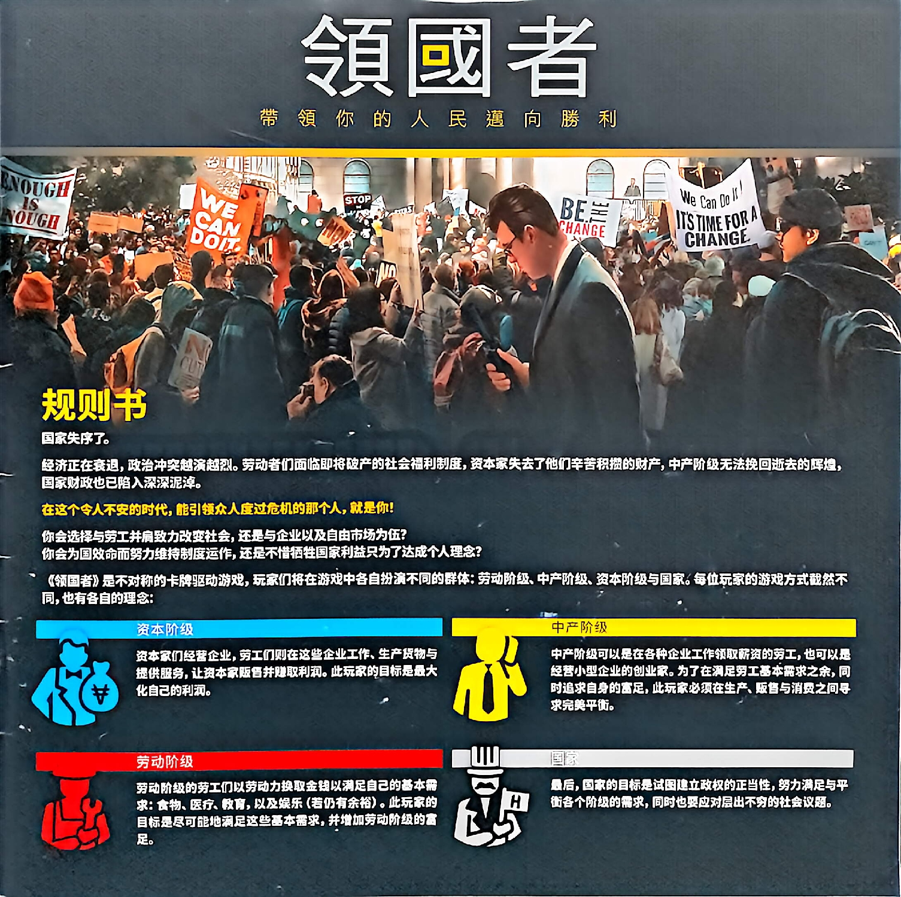
本页整理自哔哩哔哩「客厅猫桌游研究会」发布的《领国者规则书》上篇与下篇所载官方中文规则书扫描图(Hegemony: Lead Your Class to Victory,Vangelis Bagiartakis、Varnavas Timotheou 设计,Hegemonic Project Games 出版),共 36 页逐页转录,并在对应章节嵌入原书扫描页供对照——点击任意扫描页即可放大查看。内容涵盖游戏配件与符号、游戏图板与玩家图板、设置、回合流程(准备/行动/生产/表决/得分阶段)、四大阶级各自的基础行动与自由行动、政策表、其他规则(IMF 干预等)与规则释疑。规则内容归版权方所有,转录仅供个人学习查阅。
整理说明:扫描页经逐页放大转录、数字逐位核对与跨页衔接校验,个别印刷过小的卡面文字无法辨认处以〔?〕标示。原书花体货币符号在各页印法不一,全书统一转写作 𝓥;表内"✓/×/·"为原书符号。原书排印错误均按原文照录(如第 3 页"231 个木制配件"各项之和实为 241、第 12 页"的的/为为"、第 16 页"每间每间"、第 34 页"价格。。"等);以下数处径改并在此说明——第 15 页"当玩家派遣罢工时"改为"派遣劳工"(与第 23 页同句一致),"平放躺在栏位上"按同句字形定为"平放置在栏位上";第 18 页范例"麦克𝓥遣"中的花体符号系原书排印之误,径改为"派遣"。第 15/23 页卡面照片中的小字价格(16𝓥、25𝓥/30𝓥/15𝓥)为图示内容,仅作参考。
领国者 · 规则书
封面标题：領國者——帶領你的人民邁向勝利
国家失序了。
经济正在衰退，政治冲突越演越烈。劳动者们面临即将破产的社会福利制度，资本家失去了他们辛苦积攒的财产，中产阶级无法挽回逝去的辉煌，国家财政也已陷入深深泥淖。
在这个令人不安的时代，能引领众人度过危机的那个人，就是你!
你会选择与劳工并肩致力改变社会，还是与企业以及自由市场为伍?
你会为国效命而努力维持制度运作，还是不惜牺牲国家利益只为了达成个人理念?
《领国者》是不对称的卡牌驱动游戏，玩家们将在游戏中各自扮演不同的群体：劳动阶级、中产阶级、资本阶级与国家。每位玩家的游戏方式截然不同，也有各自的理念：
资本阶级
资本家们经营企业，劳工们则在这些企业工作、生产货物与提供服务，让资本家营运并赚取利润。此玩家的目标是最大化自己的利润。
中产阶级
中产阶级可以是在各种企业工作领取薪资的劳工，也可以是经营小型企业的创业家。为了在满足劳工基本需求之余，同时追求自身的富足，此玩家必须在生产、贩售与消费之间寻求完美平衡。
劳动阶级
劳动阶级的劳工们以劳动力换取金钱以满足自己的基本需求：食物、医疗、教育，以及娱乐(若仍有余裕)。此玩家的目标是尽可能地满足这些基本需求，并增加劳动阶级的富足。
国家
最后，国家的目标是试图建立政权的正当性，努力满足与平衡各个阶级的需求，同时也要应对层出不穷的社会议题。
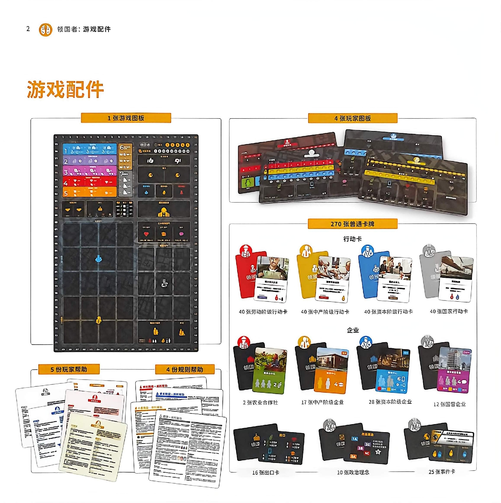
游戏配件
图版
- 1 张游戏图板
- 4 张玩家图板
- 5 份玩家帮助
- 4 份规则帮助
270 张普通卡牌
行动卡：
- 40 张劳动阶级行动卡
- 40 张中产阶级行动卡
- 40 张资本阶级行动卡
- 40 张国家行动卡
企业：
- 2 张农业合作社
- 17 张中产阶级企业
- 28 张资本阶级企业
- 12 张国营企业
其他卡牌：
- 16 张出口卡
- 10 张政治理念
- 25 张事件卡
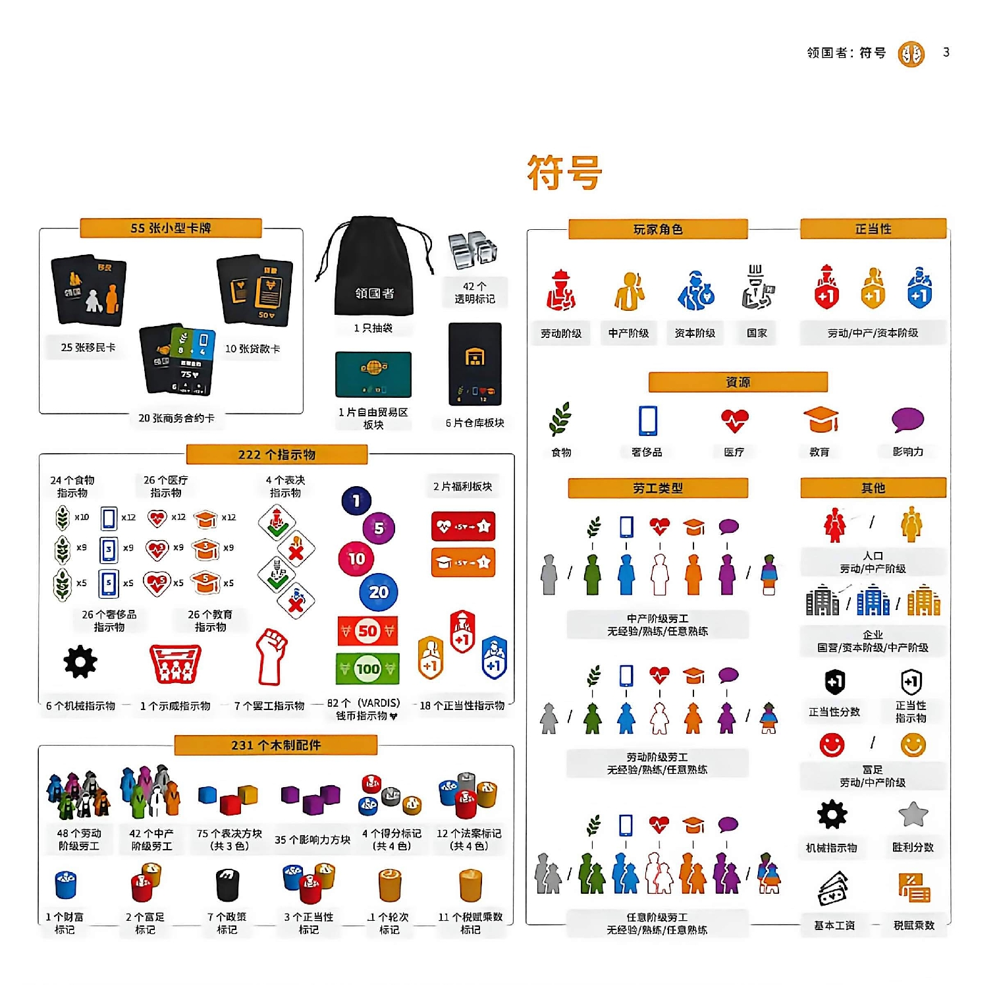
符号
55 张小型卡牌
- 25 张移民卡
- 10 张贷款卡
- 20 张商务合约卡
- 1 只抽袋
- 42 个透明标记
- 1 片自由贸易区板块
- 6 片仓库板块
222 个指示物
- 24 个食物指示物 x10 x9 x5
- 26 个医疗指示物 x12 x9 x5
- 26 个奢侈品指示物 x12 x9 x5
- 26 个教育指示物 x12 x9 x5
- 4 个表决指示物
- 2 片福利板块
- 6 个机械指示物
- 1 个示威指示物
- 7 个罢工指示物
- 82 个(VARDIS)钱币指示物 𝓥
- 18 个正当性指示物
231 个木制配件
- 48 个劳动阶级劳工
- 42 个中产阶级劳工
- 75 个表决方块(共 3 色)
- 35 个影响力方块
- 4 个得分标记(共 4 色)
- 12 个法案标记(共 4 色)
- 1 个财富标记
- 2 个富足标记
- 7 个政策标记
- 3 个正当性标记
- 1 个轮次标记
- 11 个税赋乘数标记
玩家角色
- 劳动阶级
- 中产阶级
- 资本阶级
- 国家
正当性
- 劳动/中产/资本阶级
资源
- 食物
- 奢侈品
- 医疗
- 教育
- 影响力
劳工类型
- 中产阶级劳工：无经验/熟练/任意熟练
- 劳动阶级劳工：无经验/熟练/任意熟练
- 任意阶级劳工：无经验/熟练/任意熟练
其他
- 人口：劳动/中产阶级
- 企业：国营/资本阶级/中产阶级
- 正当性分数
- 正当性指示物
- 富足：劳动/中产阶级
- 机械指示物
- 胜利分数
- 基本工资
- 税赋乘数
游戏配件解析
企业卡
这些卡牌代表玩家们为了生产货物与提供服务而设立的企业。每张企业卡皆列出营运企业所需的劳工类型与数量、企业所生产的资源以及(在特定时刻)必须支付给劳工的薪资。
企业卡以颜色指示每张卡牌所属的产业类型，游戏中有 5 种类型的产业：农业(绿色)、奢侈品(蓝色)、医疗(红色)、教育(橙色)与媒体(紫色)。
中产阶级企业
游戏中有 2 种类型的中产阶级企业：完全由中产阶级劳工营运的企业，以及与劳动阶级员工一起营运的企业。
示例卡：公开公司、私立学校
- 中产阶级劳工类型
- 劳动阶级劳工(员工)类型
- 员工生产奖励
- 员工薪资指示
资本阶级/国营企业
示例卡：超级市场(设立费用 16𝓥)
- 设立费用
- •:指示起始企业
- ••:指示 2 人游戏专用的起始企业
- •••:指示 3 与 4 人游戏专用的起始企业
- 企业名称
- 产业(以颜色指示)
- 所生产的货物/服务
- 机械生产奖励(能将机械指示物放在企业上以提高产能)
- 所需求的劳工(以颜色指示对应产业的熟练劳工)
- 3 级薪资、2 级薪资、1 级薪资
其他类型的企业
农业合作社是一种只能由劳动阶级劳工以其行动卡设立的特殊企业。此企业需要 3 名无经验劳工负责营运，并生产 2 食物。农业合作社是私人企业，而且不会放在主游戏图板上。
自动化企业总是在营运状态—无须劳工就能生产货物，也无须支付薪资。须注意的是，一般企业卡不会因为放有机械指示物就被视为自动化企业。只有牌面上印有机械图示(而且没有任何劳工栏位)的企业才是自动化企业。
示例卡：〔?〕〔?〕合作社;〔?〕子〔?〕〔?〕〔?〕(设立费用 25𝓥)
行动卡
这些卡牌能让玩家在自己的回合执行行动，玩家能打出卡牌使用卡牌效果，或弃置卡牌执行基础行动。
示例卡(两张，卡名过小无法辨认):
- 插图
- 卡牌名称
- 卡牌效果
- 卡牌需求
- 角色指示
- 正当性变化(游戏人数少于 4 人时无视此部分)
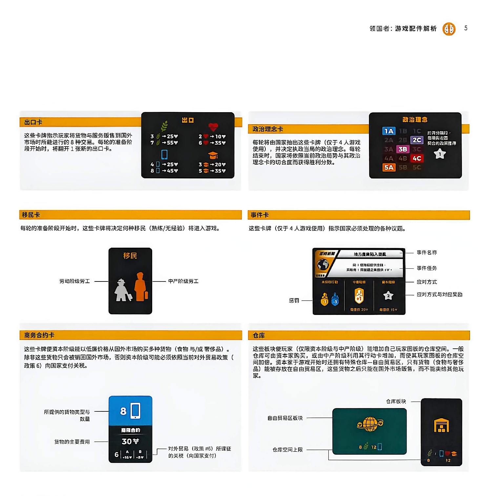
出口卡
这些卡牌指示玩家将货物与服务贩售到国外市场时所能进行的 8 种交易。每轮的准备阶段开始时，将翻开 1 张新的出口卡。
卡面（出口）：3〔麦穗图标〕→25𝓥、7〔麦穗图标〕→55𝓥、2〔红心图标〕→10𝓥、6〔红心图标〕→35𝓥、4〔手机图标〕→25𝓥、8〔手机图标〕→45𝓥、3〔学位帽图标〕→20𝓥、5〔学位帽图标〕→35𝓥
政治理念卡
每轮将由国家抽出这些卡牌（仅于 4 人游戏使用），并决定执政当局的政治理念。每轮结束时，国家将依照当前政治局势与其政治理念卡的切合度而获得胜利分数。
卡面（政治理念）：印有 1A–5C 共 15 格编号列表（1A、2C、3B、4C、5A 为彩色高亮，其余为灰色），右侧有一颗标有 1 的星形标记；右上角另有小字说明，印刷过小无法辨认〔?〕。
移民卡
每轮的准备阶段开始时，这些卡牌将决定何种移民（熟练/无经验）将进入游戏。
卡面标注（引线）：劳动阶级劳工（左侧灰色人像）、中产阶级劳工（右侧橙色人像）；卡面顶部标题：移民。
事件卡
这些卡牌（仅于 4 人游戏使用）指示国家必须处理的各种议题。
卡面标注（引线）：事件名称、事件任务、应对方式、应对方式与对应奖励、惩罚。
卡面（事件）：上方为名称横幅与事件任务栏，下方分为三个应对方式栏位，分别印有标有 1、1 的双色盾牌图标、标有 +1〔?〕的盾牌图标与标有 2 的星形图标，底部印有 20𝓥〔?〕与 1〔?〕𝓥〔?〕；卡内印刷文字过小，无法辨认〔?〕。
商务合约卡
这些卡牌使资本阶级能以低廉价格从国外市场购买多种货物（食物 与/或 奢侈品）。除非这些货物只会被销回国外市场，否则资本阶级可能必须依照当前对外贸易政策（政策 6）向国家支付关税。
卡面标注（引线）：所提供的货物类型与数量（蓝色区域：8〔手机图标〕）、货物的主要费用（30𝓥）、对外贸易（政策 #6）所课征的关税（向国家支付）。
卡面：橙底黑带上印“商务合约”，底部一行印 6｜A〔图标〕16𝓥｜B〔图标〕8𝓥〔?〕。
仓库
这些板块使玩家（仅限资本阶级与中产阶级）能增加自己玩家图板的仓库空间。一般仓库可由资本家购买，或由中产阶级利用其行动卡增加，而使其玩家图板的仓库空间加倍。资本家于游戏开始时还拥有特殊仓库—自由贸易区，只有货物（食物与奢侈品）能被存放在自由贸易区，这些货物之后只能在国外市场贩售，而不能卖给其他玩家。
卡面标注（引线）：仓库板块（右侧黑色板块，印有仓库图标，底部为〔麦穗图标〕0 与〔手机·红心·学位帽图标〕12〔?〕）、自由贸易区板块（左侧绿色板块，印有地球图标，底部为 0〔麦穗图标〕12〔手机图标〕）。
游戏图板
〔本页为游戏图板整版示意图：图板中央印有政策表、各轨道、产业格与部门栏位等，其印刷文字过小无法辨认〔?〕，图板四周环绕一圈编号空格（编号极小，不逐一转录）。以下为围绕图板的引线标注文字。〕
政策表： 这张表指示游戏拥有哪些政策，而当前又是哪些政策生效。每项政策都能划分为三个区段，如同光谱一般，每个区段各自对应不同的意识形态。
政策 1 至 5 的意识形态光谱变化从社会主义（A）至新自由主义（C），而政策 6 与 7 的光谱两端则为民族主义（A）与全球主义（C）。为了自己的利益，玩家们将于游戏过程不断地试图改变这些政策。
商务合约： 这里用来放置资本阶级所使用的商务合约卡，放置的卡牌数量由政策 6—对外贸易决定。
出口： 这里用来放置出口卡，这些卡牌能让玩家向国外市场贩售货物与服务。
进口： 需要货物（食物与奢侈品）时，能向国外市场购买。购买费用列于底部，但依照当前的对外贸易政策（政策 6），玩家可能必须依照该栏位的标记指示向国家支付关税。
国家财政部： 这里用来存放国家的金钱。
民营部门： 又分为资本阶级企业区（上）与中产阶级企业区（下），不同阶级必须将企业设立在专属于自己的栏位。
职业介绍所： 这里用来放置待业劳工：新劳工（通常于每轮开始时进入游戏）以及于游戏过程中失业的劳工。
胜利分数轨： 用来记录玩家于游戏过程获得的胜利分数。
轮次轨： 用来记录当前游戏轮次。
税轨乘数： 用来记录税轨乘数的数值。税轨乘数受到政策 3、4 与 5 的影响，而决定资本阶级与中产阶级须缴纳的税额。
表决结果： 每当进行表决时，玩家们先表达各自支持或反对提案的立场，接着从抽袋抽取方块以决定表决结果。玩家能依照每位玩家的立场，将方块放在这些栏位。
事件： 这里用来放置国家必须处理的事件卡（仅于 4 人游戏使用）。
国家补助： 这里用来放置国家透过事件卡或卡牌效果所提供的补助（通常为资源或金钱，仅于 4 人游戏使用）。
公共服务： 这里用来放置国家所生产的资源（医疗、教育与影响力）。劳动阶级与中产阶级能任意购买这些资源，而医疗与教育的购买价格由政策 4 与 5 决定。
国营部门： 这里用来放置国营企业。设置游戏时会将所有的国营企业放在图板上，但某些国营企业可能因为国营部门的规模（由政策 1—财政政策决定）而变为关闭状态（背面朝上）。
移民： 这里用来放置移民牌库。当移民进入游戏时，移民的类型（熟练与否、属于哪种产业）将抽取牌库的卡牌决定，至于从牌库抽取的卡牌数量则由政策 7—移民决定。
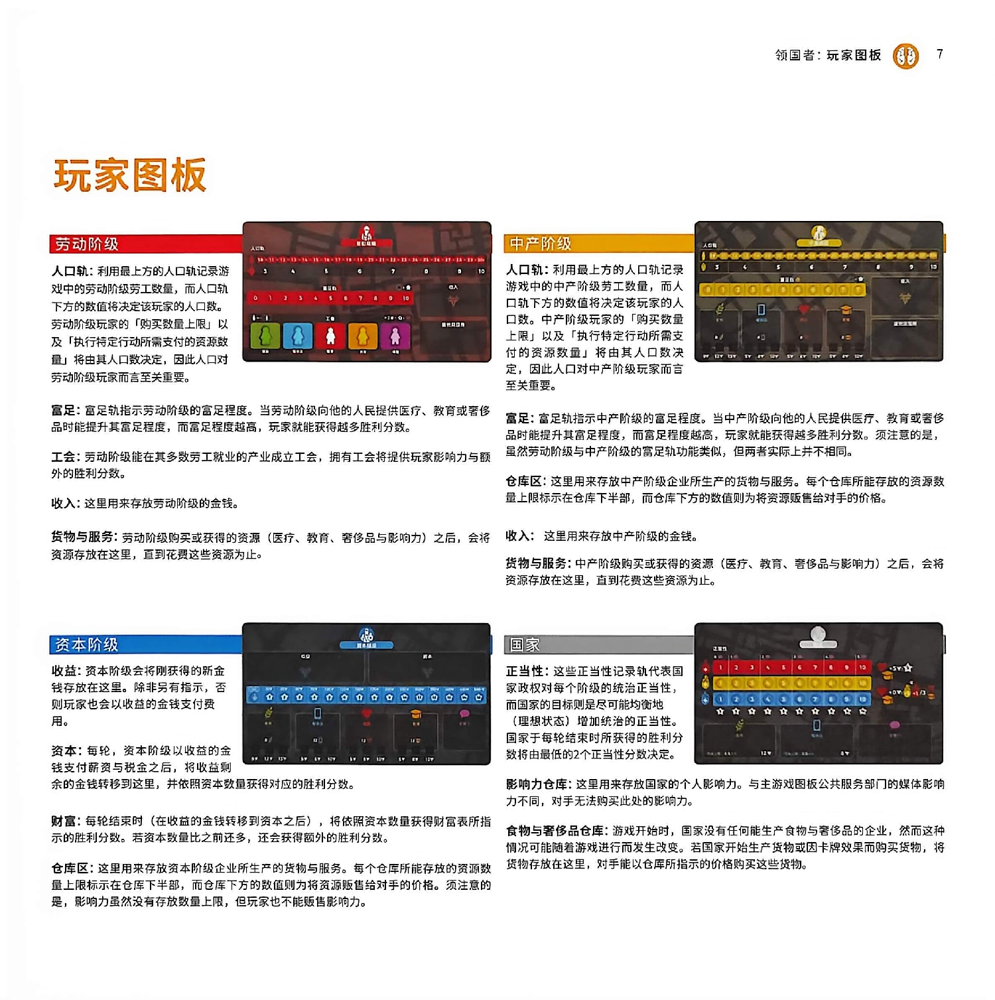
玩家图板
劳动阶级
人口轨:利用最上方的人口轨记录游戏中的劳动阶级劳工数量，而人口轨下方的数值将决定该玩家的人口数。劳动阶级玩家的「购买数量上限」以及「执行特定行动所需支付的资源数量」将由其人口数决定，因此人口对劳动阶级玩家而言至关重要。
富足:富足轨指示劳动阶级的富足程度。当劳动阶级向他的人民提供医疗、教育或奢侈品时能提升其富足程度，而富足程度越高，玩家就能获得越多胜利分数。
工会:劳动阶级能在其多数劳工就业的产业成立工会，拥有工会将提供玩家影响力与额外的胜利分数。
收入:这里用来存放劳动阶级的金钱。
货物与服务:劳动阶级购买或获得的资源(医疗、教育、奢侈品与影响力)之后，会将资源存放在这里，直到花费这些资源为止。
中产阶级
人口轨:利用最上方的人口轨记录游戏中的中产阶级劳工数量，而人口轨下方的数值将决定该玩家的人口数。中产阶级玩家的「购买数量上限」以及「执行特定行动所需支付的资源数量」将由其人口数决定，因此人口对中产阶级玩家而言至关重要。
富足:富足轨指示中产阶级的富足程度。当中产阶级向他的人民提供医疗、教育或奢侈品时能提升其富足程度，而富足程度越高，玩家就能获得越多胜利分数。须注意的是，虽然劳动阶级与中产阶级的富足轨功能类似，但两者实际上并不相同。
仓储区:这里用来存放中产阶级企业所生产的货物与服务。每个仓库所能存放的资源数量上限标示在仓库下半部，而仓库下方的数值则为将资源贩售给对手的价格。
收入:这里用来存放中产阶级的金钱。
货物与服务:中产阶级购买或获得的资源(医疗、教育、奢侈品与影响力)之后，会将资源存放在这里，直到花费这些资源为止。
资本阶级
收益:资本阶级会将刚获得的新金钱存放在这里。除非另有指示，否则玩家也会以收益的金钱支付费用。
资本:每轮，资本阶级以收益的金钱支付薪资与税金之后，将收益剩余的金钱转移到这里，并依照资本数量获得对应的胜利分数。
财富:每轮结束时(在收益的金钱转移到资本之后)，将依照资本数量获得财富表所指示的胜利分数。若资本数量比之前还多，还会获得额外的胜利分数。
仓储区:这里用来存放资本阶级企业所生产的货物与服务。每个仓库所能存放的资源数量上限标示在仓库下半部，而仓库下方的数值则为将资源贩售给对手的价格。须注意的是，影响力虽然没有存放数量上限，但玩家也不能贩售影响力。
国家
正当性:这些正当性记录轨代表国家政权对每个阶级的统治正当性，而国家的目标则是尽可能均衡地(理想状态)增加统治的正当性。国家于每轮结束时获得的胜利分数将由最低的 2 个正当性分数决定。
影响力仓库:这里用来存放国家的个人影响力。与主游戏图板公共服务部门的媒体影响力不同，对手无法购买此处的影响力。
食物与奢侈品仓库:游戏开始时，国家没有任何能生产食物与奢侈品的企业，然而这种情况可能随着游戏进行而发生改变。若国家开始生产货物或因卡牌效果而购买货物，将货物存放在这里，对手能以仓库所指示的价格购买这些货物。
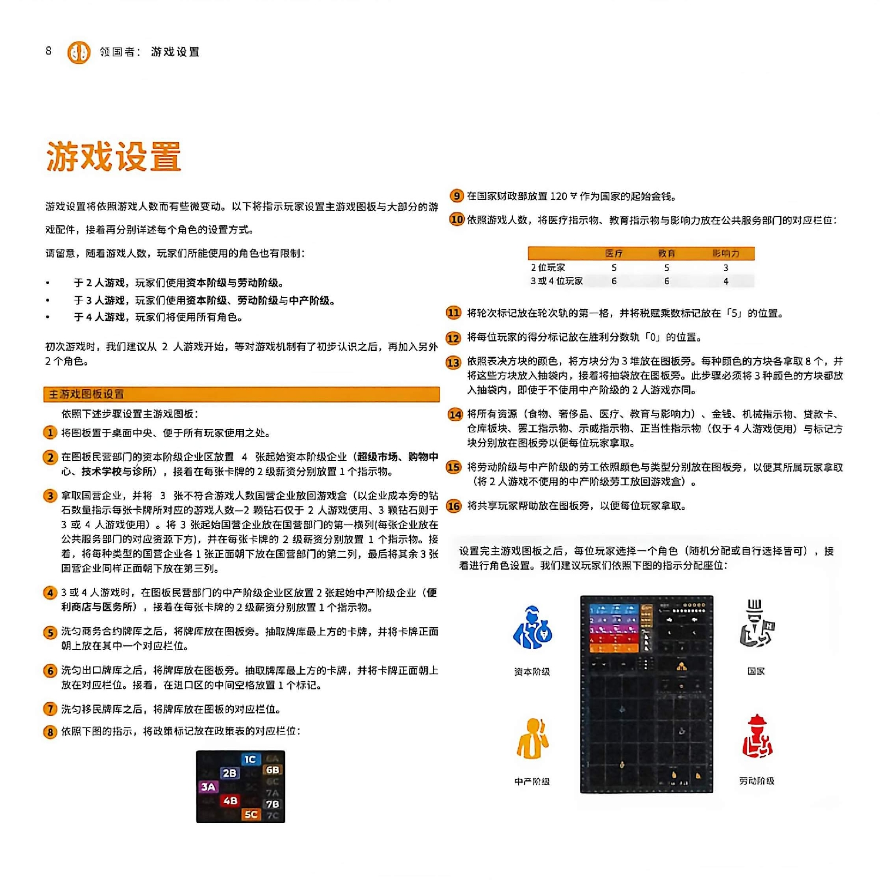
游戏设置
游戏设置将依照游戏人数而有些微变动。以下将指示玩家设置主游戏图板与大部分的游戏配件，接着再分别详述每个角色的设置方式。
请注意，随着游戏人数，玩家们所能使用的角色也有限制：
- 于 2 人游戏，玩家们使用资本阶级与劳动阶级。
- 于 3 人游戏，玩家们使用资本阶级、劳动阶级与中产阶级。
- 于 4 人游戏，玩家们将使用所有角色。
初次游戏时，我们建议从 2 人游戏开始，等对游戏机制有了初步认识之后，再加入另外 2 个角色。
主游戏图板设置
依照下述步骤设置主游戏图板：
1. 将图板置于桌面中央、便于所有玩家使用之处。
2. 在图板民营部门的资本阶级企业区放置 4 张起始资本阶级企业(超级市场、购物中心、技术学校与诊所)，接着在每张卡牌的 2 级薪资分别放置 1 个指示物。
3. 拿取国营企业，并将 3 张不符合游戏人数国营企业放回游戏盒(以企业成本旁的钻石数量指示每张卡牌所对应的游戏人数—2 颗钻石仅于 2 人游戏使用、3 颗钻石则于 3 或 4 人游戏使用)。将 3 张起始国营企业放在国营部门的第一横列(每张企业放在公共服务部门的对应资源下方)，并在每张卡牌的 2 级薪资分别放置 1 个指示物。接着，将每种类型的国营企业各 1 张正面朝下放在国营部门的第二列，最后将其余 3 张国营企业同样正面朝下放在第三列。
4. 3 或 4 人游戏时，在图板民营部门的中产阶级企业区放置 2 张起始中产阶级企业(便利商店与医务所)，接着在每张卡牌的 2 级薪资分别放置 1 个指示物。
5. 洗匀商务合约牌库之后，将牌库放在图板旁。抽取牌库最上方的卡牌，并将卡牌正面朝上放在其中一个对应栏位。
6. 洗匀出口牌库之后，将牌库放在图板旁。抽取牌库最上方的卡牌，并将卡牌正面朝上放在对应栏位。接着，在进口区的中间空格放置 1 个标记。
7. 洗匀移民牌库之后，将牌库放在图板的对应栏位。
8. 依照下图的指示，将政策标记放在政策表的对应栏位：
图示：政策表上放置政策标记的栏位为 1C、2B、3A、4B、5C、6B、7B，其余栏位为灰色。
9. 在国家财政部放置 120𝓥 作为国家的起始金钱。
10. 依照游戏人数，将医疗指示物、教育指示物与影响力放在公共服务部门的对应栏位：
| | 医疗 | 教育 | 影响力 |
| --- | --- | --- | --- |
| 2 位玩家 | 5 | 5 | 3 |
| 3 或 4 位玩家 | 6 | 6 | 4 |
11. 将轮次标记放在轮次轨的第一格，并将税赋乘数标记放在「5」的位置。
12. 将每位玩家的得分标记放在胜利分数轨「0」的位置。
13. 依照表决方块的颜色，将方块分为 3 堆放在图板旁。每种颜色的方块各拿取 8 个，并将这些方块放入抽袋内，接着将抽袋放在图板旁。此步骤必须将 3 种颜色的方块都放入抽袋内，即使于不使用中产阶级的 2 人游戏亦同。
14. 将所有资源(食物、奢侈品、医疗、教育与影响力)、金钱、机械指示物、贷款卡、仓库板块、罢工指示物、示威指示物、正当性指示物(仅于 4 人游戏使用)与标记方块分别放在图板旁以便每位玩家拿取。
15. 将劳动阶级与中产阶级的劳工依照颜色与类型分别放在图板旁，以便其所属玩家拿取(将 2 人游戏不使用的中产阶级劳工放回游戏盒)。
16. 将共享玩家帮助放在图板旁，以便每位玩家拿取。
设置完主游戏图板之后，每位玩家选择一个角色(随机分配或自行选择皆可)，接着进行角色设置。我们建议玩家们依照下图的指示分配座位：
图示：主游戏图板四周的座位分配——左侧上方为资本阶级、左侧下方为中产阶级、右侧上方为国家、右侧下方为劳动阶级。
〔本页为整页游戏设置实物拍摄图：主图板与各玩家面板、板块、代件、卡牌、标记等组件摆放成最终设置状态，组件旁以彩色圆底数字编号(1–16)标注各组成部分。页面除页眉外无正文文字。〕
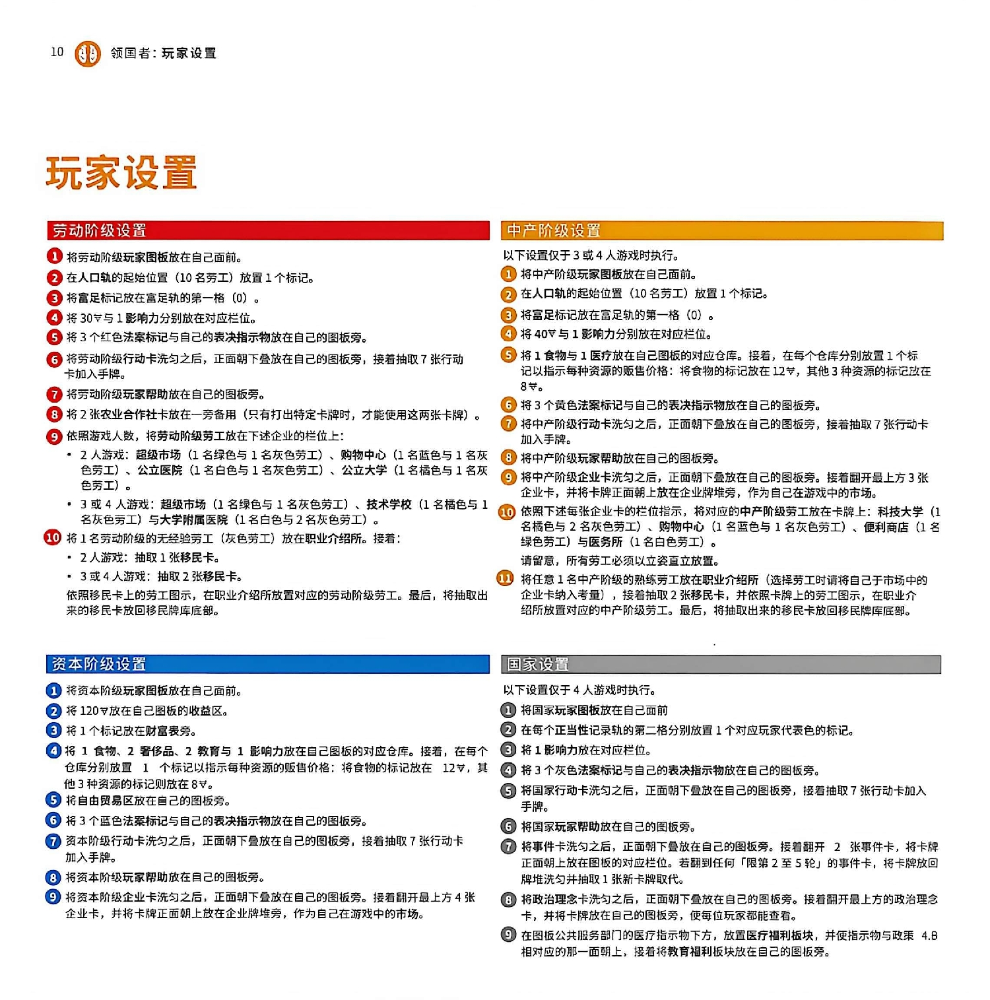
玩家设置
劳动阶级设置
1. 将劳动阶级玩家图板放在自己面前。
2. 在人口轨的起始位置(10 名劳工)放置 1 个标记。
3. 将富足标记放在富足轨的第一格(0)。
4. 将 30𝓥 与 1 影响力分别放在对应栏位。
5. 将 3 个红色法案标记与自己的表决指示物放在自己的图板旁。
6. 将劳动阶级行动卡洗匀之后，正面朝下叠放在自己的图板旁，接着抽取 7 张行动卡加入手牌。
7. 将劳动阶级玩家帮助放在自己的图板旁。
8. 将 2 张农业合作社卡放在一旁备用(只有打出特定卡牌时，才能使用这两张卡牌)。
9. 依照游戏人数，将劳动阶级劳工放在下述企业的栏位上：
- 2 人游戏：超级市场(1 名绿色与 1 名灰色劳工)、购物中心(1 名蓝色与 1 名灰色劳工)、公立医院(1 名白色与 1 名灰色劳工)、公立大学(1 名橘色与 1 名灰色劳工)。
- 3 或 4 人游戏：超级市场(1 名绿色与 1 名灰色劳工)、技术学校(1 名橘色与 1 名灰色劳工)与大学附属医院(1 名白色与 2 名灰色劳工)。
10. 将 1 名劳动阶级的无经验劳工(灰色劳工)放在职业介绍所。接着：
- 2 人游戏：抽取 1 张移民卡。
- 3 或 4 人游戏：抽取 2 张移民卡。
依照移民卡上的劳工图示，在职业介绍所放置对应的劳动阶级劳工。最后，将抽取出来的移民卡放回移民牌库底部。
中产阶级设置
以下设置仅于 3 或 4 人游戏时执行。
1. 将中产阶级玩家图板放在自己面前。
2. 在人口轨的起始位置(10 名劳工)放置 1 个标记。
3. 将富足标记放在富足轨的第一格(0)。
4. 将 40𝓥 与 1 影响力分别放在对应栏位。
5. 将 1 食物与 1 医疗放在自己图板的对应仓库。接着，在每个仓库分别放置 1 个标记以指示每种资源的贩售价格：将食物的标记放在 12𝓥，其他 3 种资源的标记改在 8𝓥。
6. 将 3 个黄色法案标记与自己的表决指示物放在自己的图板旁。
7. 将中产阶级行动卡洗匀之后，正面朝下叠放在自己的图板旁，接着抽取 7 张行动卡加入手牌。
8. 将中产阶级玩家帮助放在自己的图板旁。
9. 将中产阶级企业卡洗匀之后，正面朝下叠放在自己的图板旁。接着翻开最上方 3 张企业卡，并将卡牌正面朝上放在企业牌堆旁，作为自己在游戏中的市场。
10. 依照下述每张企业卡的栏位指示，将对应的中产阶级劳工放在卡牌上：科技大学(1 名橘色与 2 名灰色劳工)、购物中心(1 名蓝色与 1 名灰色劳工)、便利商店(1 名绿色劳工)与医务所(1 名白色劳工)。
请留意，所有劳工必须以立姿直立放置。
11. 将任意 1 名中产阶级的熟练劳工放在职业介绍所(选择劳工时请将自己于市场中的企业卡纳入考量)，接着抽取 2 张移民卡，并依照卡牌上的劳工图示，在职业介绍所放置对应的中产阶级劳工。最后，将抽取出来的移民卡放回移民牌库底部。
资本阶级设置
1. 将资本阶级玩家图板放在自己面前。
2. 将 120𝓥 放在自己图板的收益区。
3. 将 1 个标记放在财富表旁。
4. 将 1 食物、2 奢侈品、2 教育与 1 影响力放在自己图板的对应仓库。接着，在每个仓库分别放置 1 个标记以指示每种资源的贩售价格：将食物的标记放在 12𝓥，其他 3 种资源的标记则放在 8𝓥。
5. 将自由贸易区放在自己的图板旁。
6. 将 3 个蓝色法案标记与自己的表决指示物放在自己的图板旁。
7. 资本阶级行动卡洗匀之后，正面朝下叠放在自己的图板旁，接着抽取 7 张行动卡加入手牌。
8. 将资本阶级玩家帮助放在自己的图板旁。
9. 将资本阶级企业卡洗匀之后，正面朝下叠放在自己的图板旁。接着翻开最上方 4 张企业卡，并将卡牌正面朝上放在企业牌堆旁，作为自己在游戏中的市场。
国家设置
以下设置仅于 4 人游戏时执行。
1. 将国家玩家图板放在自己面前
2. 在每个正当性记录轨的第二格分别放置 1 个对应玩家代表色的标记。
3. 将 1 影响力放在对应栏位。
4. 将 3 个灰色法案标记与自己的表决指示物放在自己的图板旁。
5. 将国家行动卡洗匀之后，正面朝下叠放在自己的图板旁，接着抽取 7 张行动卡加入手牌。
6. 将国家玩家帮助放在自己的图板旁。
7. 将事件卡洗匀之后，正面朝下叠放在自己的图板旁。接着翻开 2 张事件卡，将卡牌正面朝上放在图板的对应栏位。若翻到任何「限第 2 至 5 轮」的事件卡，将卡牌放回牌堆洗匀并抽取 1 张新卡牌取代。
8. 将政治理念卡洗匀之后，正面朝下叠放在自己的图板旁。接着翻开最上方的政治理念卡，并将卡牌放在自己的图板旁，使每位玩家都能查看。
9. 在图板公共服务部门的医疗指示物下方，放置医疗福利板块，并便指示物与政策 4.8 相对应的那一面朝上，接着将教育福利板块放在自己的图板旁。
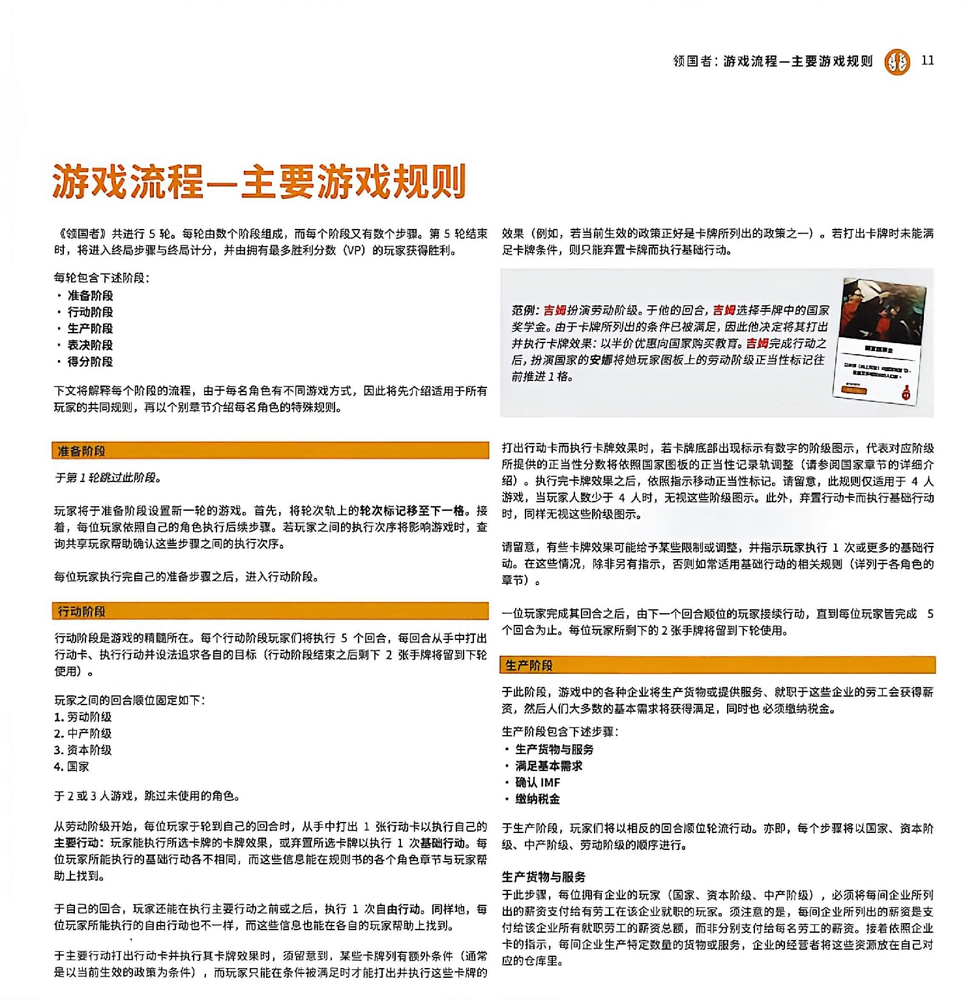
游戏流程 — 主要游戏规则
《领国者》共进行 5 轮。每轮由数个阶段组成，而每个阶段又有数个步骤。第 5 轮结束时，将进入终局步骤与终局计分，并由拥有最多胜利分数（VP）的玩家获得胜利。
每轮包含下述阶段：
- 准备阶段
- 行动阶段
- 生产阶段
- 表决阶段
- 得分阶段
下文将解释每个阶段的流程，由于每名角色有不同游戏方式，因此将先介绍适用于所有玩家的共同规则。再以个别章节介绍每名角色的特殊规则。
准备阶段
于第 1 轮跳过此阶段。
玩家将于准备阶段设置新一轮的游戏。首先，将轮次轨上的轮次标记移至下一格。接着，每位玩家依照自己的角色执行后续步骤。若玩家之间的执行次序将影响游戏时，咨询共享玩家帮助确认这些步骤之间的执行次序。
每位玩家执行完自己的准备步骤之后，进入行动阶段。
行动阶段
行动阶段是游戏的精髓所在。每个行动阶段玩家们将执行 5 个回合，每回合从手中打出行动卡、执行行动并设法追求各自的目标（行动阶段结束之后剩下 2 张手牌将留到下轮使用）。
玩家之间的回合顺位固定如下：
1. 劳动阶级
2. 中产阶级
3. 资本阶级
4. 国家
于 2 或 3 人游戏，跳过未使用的角色。
从劳动阶级开始，每位玩家于轮到自己的回合时，从手中打出 1 张行动卡以执行自己的主要行动：玩家能执行所选卡牌的卡牌效果，或弃置所选卡牌以执行 1 次基础行动。每位玩家所能执行的基础行动各不相同，而这些信息能在规则书的各个角色章节与玩家帮助上找到。
于自己的回合，玩家还能在执行主要行动之前或之后，执行 1 次自由行动。同样地，每位玩家所能执行的自由行动也不一样，而这些信息也能在各自的玩家帮助上找到。
于主要行动打出行动卡并执行其卡牌效果时，须留意到，某些卡牌列有额外条件（通常是以当前生效的政策为条件），而玩家只能在条件被满足时才能打出并执行这些卡牌的效果（例如，若当前生效的政策正好是卡牌所列出的政策之一）。若打出卡牌时未能满足卡牌条件，则只能弃置卡牌而执行基础行动。
范例：吉姆扮演劳动阶级。于他的回合，吉姆选择手牌中的国家奖学金。由于卡牌所列出的条件已被满足，因此他决定将其打出并执行卡牌效果：以半价优惠向国家购买教育。吉姆完成行动之后，扮演国家的安娜将她玩家图板上的劳动阶级正当性标记往前推进 1 格。
打出行动卡而执行卡牌效果时，若卡牌底部出现标示有数字的阶段图示，代表对应阶段所提供的正当性分数将依照国家图板的正当性记录轨调整（请参阅国家章节的详细介绍）。执行完卡牌效果之后，依照指示移动正当性标记。请留意，此规则仅适用于 4 人游戏，当玩家人数少于 4 人时，无视这些阶段图示。此外，弃置行动卡而执行基础行动时，同样无视这些阶段图示。
请留意，有些卡牌效果可能给予某些限制或调整，并指示玩家执行 1 次或更多的基础行动。在这些情况，除非另有指示，否则如常适用基础行动的相关规则（详列于各角色的章节）。
一位玩家完成其回合之后，由下一个回合顺位的玩家接续行动，直到每位玩家皆完成 5 个回合为止。每位玩家所剩下的 2 张手牌将留到下轮使用。
生产阶段
于此阶段，游戏中的各种企业将生产货物或提供服务、就职于这些企业的劳工获得薪资，然后人们大多数的基本需求将获得满足，同时也必须缴纳税金。
生产阶段包含下述步骤：
- 生产货物与服务
- 满足基本需求
- 确认 IMF
- 缴纳税金
于生产阶段，玩家们将以相反的回合顺位轮流行动。亦即，每个步骤将以国家、资本阶级、中产阶级、劳动阶级的顺序进行。
生产货物与服务
于此步骤，每位拥有企业的玩家（国家、资本阶级、中产阶级），必须将每间企业所列出的薪资支付给有劳工在该企业就职的玩家。须注意的是，每间企业所列出的薪资是支付给该企业所有就职劳工的薪资总额，而非分别支付给每名劳工的薪资。接着依照企业卡的指示，每间企业生产特定数量的货物或服务，企业的经营者将这些资源放在自己对应的仓库里。
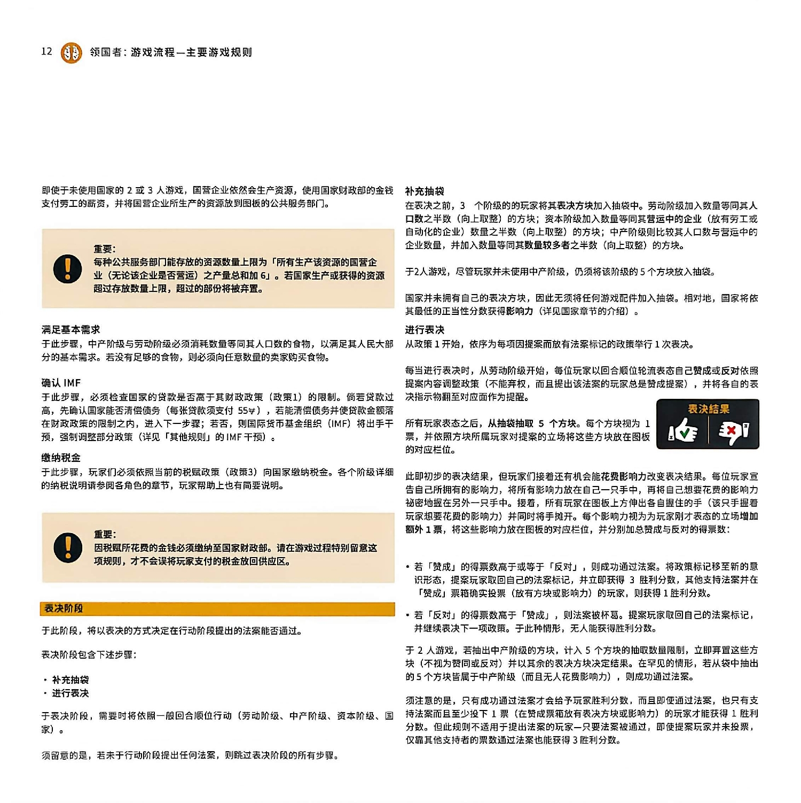
即使于未使用国家的 2 或 3 人游戏，国营企业依然会生产资源。使用国家财政部的金钱支付劳工的薪资，并将国营企业所生产的资源放到图板的公共服务部门。
重要：
每种公共服务部门能存放的资源数量上限为「所有生产该资源的国营企业（无论该企业是否营运）之产量总和加 6」。若国家生产或获得的资源超过存放数量上限，超过的部份将被弃置。
满足基本需求
于此步骤，中产阶级与劳动阶级必须消耗数量等同其人口数的食物，以满足其人民大部分的基本需求。若没有足够的食物，则必须向任意数量的卖家购买食物。
确认 IMF
于此步骤，必须检查国家的贷款是否高于其财政政策（政策1）的限制。倘若贷款过高，先确认国家能否清偿债务（每张贷款须支付 5𝓥），若能清偿债务并使贷款金额落在财政政策的限制之内，进入下一步骤；若否，则国际货币基金组织（IMF）将出手干预，强制调整部分政策（详见「其他规则」的 IMF 干预）。
缴纳税金
于此步骤，玩家们必须依照当前的税赋政策（政策3）向国家缴纳税金。各个阶级详细的纳税说明请参阅各角色的章节，玩家帮助上也有简要说明。
重要：
因税赋所花费的金钱必须缴纳至国家财政部。请在游戏过程特别留意这项规则，才不会误将玩家支付的税金放回供应区。
表决阶段
于此阶段，将以表决的方式决定在行动阶段提出的法案能否通过。
表决阶段包含下述步骤：
- 补充抽袋
- 进行表决
于表决阶段，需要时将依照一般回合顺位行动（劳动阶级、中产阶级、资本阶级、国家）。
须留意的是，若未于行动阶段提出任何法案，则跳过表决阶段的所有步骤。
补充抽袋
在表决之前，3 个阶级的的玩家将其表决方块加入抽袋中。劳动阶级加入数量等同其人口数之半数（向上取整）的方块；资本阶级加入数量等同其营运中的企业（放有劳工或自动化的企业）数量之半数（向上取整）的方块；中产阶级则比较其人口数与营运中的企业数量，并加入数量等同其数量较多者之半数（向上取整）的方块。
于2人游戏，尽管玩家并未使用中产阶级，仍须将该阶级的 5 个方块放入抽袋。
国家并未拥有自己的表决方块，因此无须将任何游戏配件加入抽袋。相对地，国家将依其最低的正当性分数获得影响力（详见国家章节的介绍）。
进行表决
从政策 1 开始，依序为每项因提案而放有法案标记的政策举行 1 次表决。
每当进行表决时，从劳动阶级开始，每位玩家以回合顺位轮流表态自己赞成或反对依照提案内容调整政策（不能弃权，而且提出该法案的玩家总是赞成提案），并将各自的表决指示物翻至对应面作为提醒。
所有玩家表态之后，从抽袋抽取 5 个方块。每个方块视为 1 票，并依照方块所属玩家对提案的立场将这些方块放在图板的对应栏位。
（图示：「表决結果」卡牌——绿色对勾拇指与红色叉号倒拇指的图标）
此即初步的表决结果，但玩家们接着还有机会能花费影响力改变表决结果。每位玩家宣告自己所拥有的影响力，将所有影响力放在自己一只手中，再将自己想要花费的影响力秘密地握在另外一只手中。接着，所有玩家在图板上方伸出各自握住的手（该只手握着玩家想要花费的影响力）并同时将手摊开。每个影响力视为为玩家刚才表态的立场增加额外 1 票，将这些影响力放在图板的对应栏位，并分别加总赞成与反对的得票数：
- 若「赞成」的得票数高于或等于「反对」，则成功通过法案。将政策标记移至新的意识形态，提案玩家取回自己的法案标记，并立刻获得 3 胜利分数，其他支持法案并在「赞成」票箱确实投票（放有方块或影响力）的玩家，则获得 1 胜利分数。
- 若「反对」的得票数高于「赞成」，则法案被杯葛。提案玩家取回自己的法案标记，并继续表决下一项政策。于此种情形，无人能获得胜利分数。
于 2 人游戏，若抽出中产阶级的方块，计入 5 个方块的抽取数量限制，立即弃置这些方块（不视为赞成或反对）并以其余的表决方块决定结果。在罕见的情形，若从袋中抽出的 5 个方块皆属于中产阶级（而且无人花费影响力），则成功通过法案。
须注意的是，只有成功通过法案才会给予玩家胜利分数，而且即使通过法案，也只有支持法案而且至少投下 1 票（在赞成票箱放有表决方块或影响力）的玩家才能获得 1 胜利分数。但此规则不适用于提出法案的玩家—只要法案被通过，即使提案玩家并未投票，仅靠其他支持者的票数通过法案也能获得 3 胜利分数。
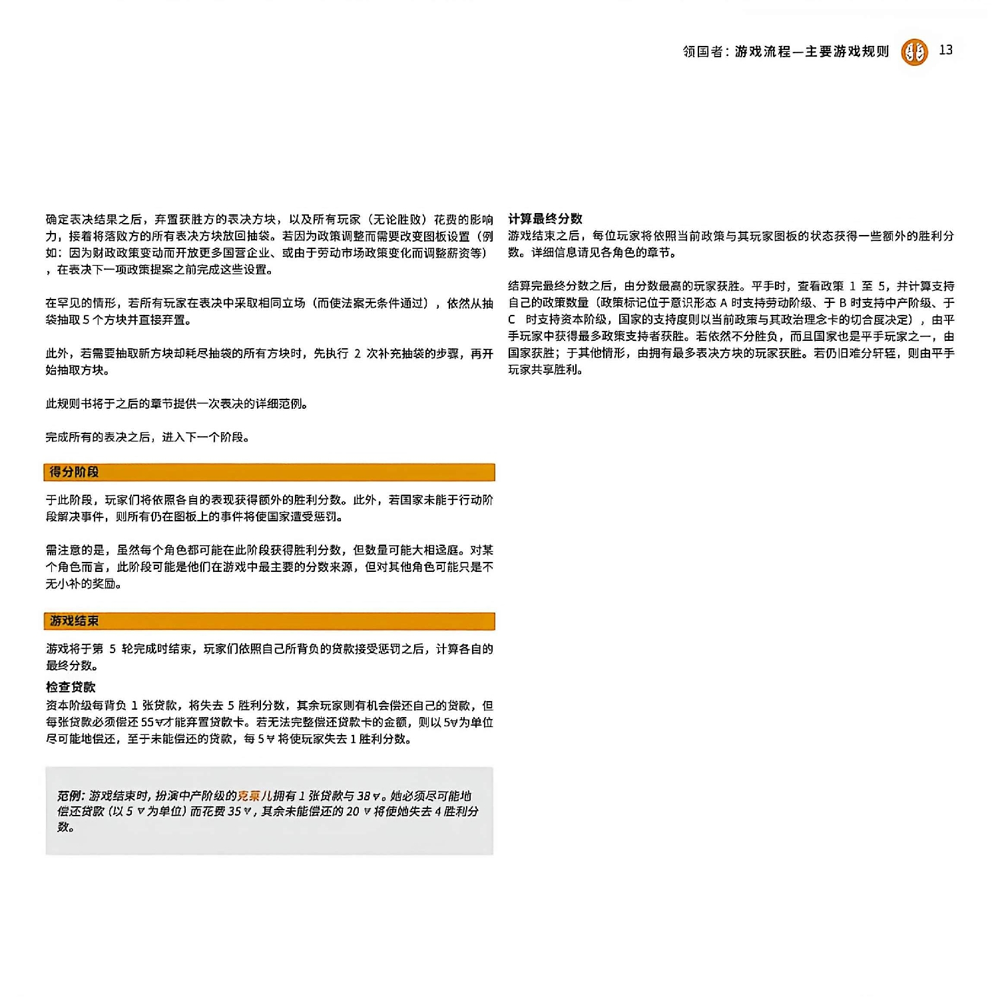
确定表决结果之后，弃置获胜方的表决方块，以及所有玩家（无论胜负）花费的影响力，接着将落败方的所有表决方块放回抽袋。若因为政策调整而需要改变图板设置（例如：因为财政政策变动而开放更多国有企业、或由于劳动市场政策变化而调整薪资等），在表决下一项政策提案之前完成这些设置。
在罕见的情形，若所有玩家在表决中采取相同立场（而使法案无条件通过），依然从抽袋抽取 5 个方块并直接弃置。
此外，若需要抽取新方块却耗尽抽袋的所有方块时，先执行 2 次补充抽袋的步骤，再开始抽取方块。
此规则书将于之后的章节提供一次表决的详细范例。
完成所有的表决之后，进入下一个阶段。
得分阶段
于此阶段，玩家们将依照各自的表现获得额外的胜利分数。此外，若国家未能于行动阶段解决事件，则所有仍在图板上的事件将使国家遭受惩罚。
需注意的是，虽然每个角色都可能在此阶段获得胜利分数，但数量可能大相迳庭。对某个角色而言，此阶段可能是他们在游戏中最主要的分数来源，但对其他角色可能只是不无小补的奖励。
游戏结束
游戏将于第 5 轮完成时结束，玩家们依照自己所背负的贷款接受惩罚之后，计算各自的最终分数。
检查贷款
资产阶级每背负 1 张贷款，将失去 5 胜利分数，其余玩家则有机会偿还自己的贷款，但每张贷款必须偿还 55𝓥 才能弃置贷款卡。若无法完整偿还贷款卡的金额，则以 5𝓥 为单位尽可能地偿还，至于未能偿还的贷款，每 5𝓥 将使玩家失去 1 胜利分数。
范例：游戏结束时，扮演中产阶级的艾蜜儿拥有 1 张贷款与 38𝓥。她必须尽可能地偿还贷款（以 5𝓥 为单位）而花费 35𝓥，其余未能偿还的 20𝓥 将使她失去 4 胜利分数。
计算最终分数
游戏结束之后，每位玩家将依照当前政策与其玩家图板的状态获得一些额外的胜利分数。详细信息请见各角色的章节。
结算最终分数之后，由分数最高的玩家获胜。平手时，查看政策 1 至 5，并计算支持自己的政策数量（政策标记位于意识形态 A 时支持劳动阶级、于 B 时支持中产阶级、于 C 时支持资本阶级，国家的支持度则以当前政策与其政治理念卡的切合度决定），由平手玩家中获得最多政策支持者获胜。若依然不分胜负，而且国家也是平手玩家之一，由国家获胜；于其他情形，由拥有最多表决方块的玩家获胜。若仍旧难分轩轾，则由平手玩家共享胜利。
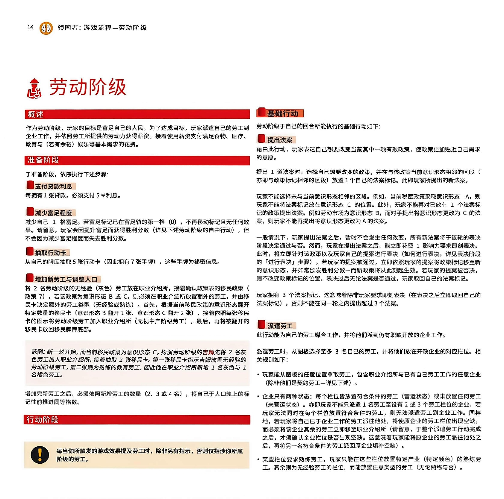
劳动阶级
概述
作为劳动阶级，玩家的目标是富足自己的人民。为了达成目标，玩家派遣自己的劳工到企业工作，并依照劳工所提供的劳动力获得薪资。接着使用薪资支付满足食物、医疗、教育与（若有余裕）娱乐等基本需求的花费。
准备阶段
于准备阶段，依序执行下述步骤：
支付贷款利息
每拥有 1 张贷款，必须支付 5𝓥 利息。
减少富足程度
减少自己 1 格富足。若富足标记已在富足轨的第一格（0），不再移动标记且无任何效果。请留意，玩家会因提升富足而获得胜利分数（详见下述劳动阶级的自由行动），但不会因为减少富足程度而失去胜利分数。
抽取行动卡
从自己的牌库抽取 5 张行动卡（因此拥有 7 张手牌），这些手牌为秘密信息。
增加新劳工与调整人口
将 2 名劳动阶级的无经验（灰色）劳工放在职业介绍所，接着确认政策表的移民政策（政策 7），若该政策为意识形态 B 或 C，则必须在职业介绍所放置额外的劳工，并由移民卡决定额外的劳工类型（无经验或熟练）。首先，根据当前移民政策的意识形态翻开特定数量的移民卡（意识形态 B 翻开 1 张、意识形态 C 翻开 2 张），接着依照每张移民卡的图示将劳动阶级劳工加入职业介绍所（无视中产阶级劳工），最后，再将被翻开的移民卡放回移民牌库底部。
范例：新一轮开始，而当前移民政策为意识形态 C。扮演劳动阶级的吉姆先将 2 名灰色劳工加入职业介绍所，接着抽取 2 张移民卡。第一张移民卡指示吉姆放置无经验的劳动阶级劳工，第二张则为熟练的教育劳工，因此他在职业介绍所新增 1 名灰色与 1 名橙色劳工。
增加完新劳工之后，必须依照新增劳工的数量（2、3 或 4 名），将自己于人口轨上的标记往前推进同等格数。
行动阶段
每当你所触发的游戏效果提及劳工时，除非另有指示，否则仅指涉你所属阶级的劳工。
基础行动
劳动阶级于自己的回合所能执行的基础行动如下：
提出法案
借此行动，玩家表达自己想要改变当前其中一项有效政策，使政策更加贴近自己需求的意图。
提出 1 道法案时，选择自己想要改变的政策，并在与该政策当前意识形态相邻的区段（亦即与政策标记相邻的区段）放置 1 个自己的法案标记。此即玩家所提出的新法案。
玩家不能选择未与当前意识形态相邻的区段。例如，当前税赋政策采取意识形态 A，则玩家不能将法案标记放在意识形态 C 的位置。此外，玩家不能再对已放有 1 个法案标记的政策提出法案。例如劳动市场为意识形态 B，而对手提出将意识形态更改为 C 的法案，则玩家不能再提出将意识形态更改为 A 的法案。
一般情况下，玩家提出法案之后，暂时不会发生任何改变，所有新法案将于该轮的表决阶段决定通过与否。然而，玩家在提出法案之后，能立即花费 1 影响力要求即刻表决。此时，将立即针对该政策以及玩家自己的提案进行表决（如何进行表决，详见表决阶段的「进行表决」步骤）。若玩家的提案被通过，立即依照玩家的提案将政策标记移至新的意识形态，并如常颁发胜利分数—而新政策将从此刻起生效。若玩家的提案被否决，则不改变政策标记的位置。表决过后无论法案是否通过，玩家取回自己的法案标记。
玩家拥有 3 个法案标记，这意味着除非玩家要求即刻表决（在表决之后立即取回自己的法案标记），否则不能在同一轮之内提出超过 3 个法案。
派遣劳工
此行动能为自己的劳工媒合工作，并将他们派到仍有职缺开放的企业工作。
派遣劳工时，从图板选择至多 3 名自己的劳工，并将他们放在开啟企业的对应栏位。相关规则如下：
- 玩家能从图板的任意位置拿取劳工，包含职业介绍所与已有自己劳工工作的任意企业（除非他们是契约劳工—详述下述）。
- 企业只有两种状态：每个栏位皆放置符合条件的劳工（营运状态）或未放置任何劳工（未营运状态）。亦即玩家不能只派遣 1 名劳工至设有 2 或 3 个劳工栏位的企业，若玩家无法同时在每个栏位放置符合条件的劳工，则无法派遣劳工到企业工作。同样地，若玩家将自己已于企业工作的劳工派往他处，将使原企业的劳工栏位出现空缺，而必须将该企业其余的劳工立即移至职业介绍所（请留意，于整个派遣劳工行动完成之后，才须确认企业栏位是否出现空缺。这意味着玩家能将原企业的劳工派往他处之后，再将另一名符合条件的劳工派回原企业填补空缺）。
- 某些栏位要求熟练劳工，玩家只能在这些栏位放置特定产业（特定颜色）的熟练劳工。其余则为无经验劳工的栏位，而能放置任意类型的劳工（无论熟练与否）。
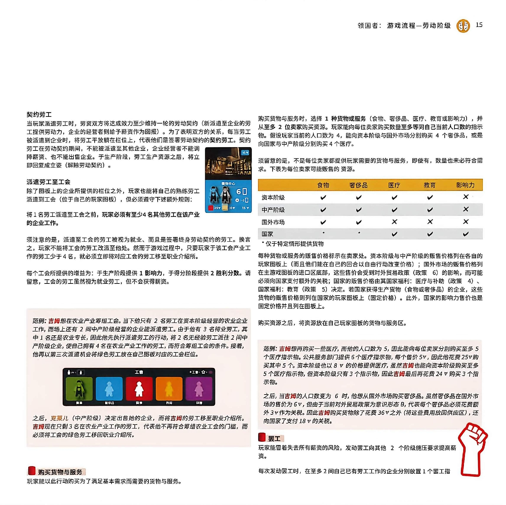
契约劳工
当玩家派遣劳工时，劳资双方将达成效力至少维持一轮的劳动契约(新派遣至企业的劳工提供劳动力，企业的经营者则给予薪资作为回报)。为了表明双方的关系，每当劳工被派遣到企业时，将劳工平放置在栏位上，代表他们是签署劳动契约的契约劳工。契约劳工在劳动契约期间，不能被派遣至其他企业，企业经营者不能调降薪资、也不能出售企业。于生产阶段，劳工生产资源之后，将立即回复成立姿(解除劳动契约)。
[图：蓝色服务图块照片——上方为建筑照片(右上角标有 16𝓥)，下方蓝色面板有两个工人指示物、标示 6 的栏位，以及 25𝓥 / 30𝓥 / 15𝓥 的价格标签]
派遣劳工至工会
除了图板上的企业所提供的栏位之外，玩家也能将自己的熟练劳工派遣到工会(位于自己的玩家图板)，但必须遵守下述额外规则：
将 1 名劳工派遣至工会之前，玩家必须有至少 4 名其他劳工在该产业的企业工作。
须注意的是，派遣至工会的劳工被视为就业、而且是签署终身劳动契约的劳工。换言之，玩家不能将工会的劳工改派至他处。然而于游戏过程中，只要玩家于该工会产业工作的劳工少于 4 名，就必须立即将对应工会的劳工移至职业介绍所。
每个工会所提供的增益为：于生产阶段提供 1 影响力，于得分阶段提供 2 胜利分数。请留意，工会的劳工虽然视为就业劳工，但不会获得薪资。
范例：吉姆想在农业产业筹组工会。当下他只有 2 名劳工在资本阶级经营的农业企业工作，而场上还有 2 间中产阶级经营的企业能派遣劳工。由于他有 3 名待业劳工，其中 1 名还是农业专长，因此他先执行派遣劳工的行动，将 2 名无经验劳工派往 2 间中产阶级企业，使自己拥有 4 名在农业产业工作的劳工，而符合筹组工会的条件。接着，他再以第三次派遣机会将绿色劳工放在自己图板对应的工会栏位。
[图：玩家图板的"工会"栏位——绿、蓝、红、橙、紫五个产业栏位，各放置劳工]
之后，克莱儿(中产阶级)决定出售她的企业，而将吉姆的劳工移至职业介绍所。吉姆现在只剩 3 名在农业产业工作的劳工，代表他不再符合筹组农业工会的门槛，而必须将工会的绿色劳工移回职业介绍所。
购买货物与服务
玩家能以此行动购买为了满足基本需求而需要的货物与服务。
购买货物与服务时，选择 1 种货物或服务(食物、奢侈品、医疗、教育或影响力)，并从至多 2 位卖家购买资源。玩家能向每位卖家购买数量至多等同自己当前人口数的指示物。假设玩家当前的人口数为 4，能向资本阶级与国外市场分别购买 4 个奢侈品，或是向国家与中产阶级分别购买 4 个医疗。
须留意的是，不是每位卖家都提供玩家需要的货物与服务，即使有，数量也未必符合需求。下表为每位卖家可能贩售的资源。
| 食物 | 奢侈品 | 医疗 | 教育 | 影响力 | |
|---|---|---|---|---|---|
| 资本阶级 | ✓ | ✓ | ✓ | ✓ | ✗ |
| 中产阶级 | ✓ | ✓ | ✓ | ✓ | ✗ |
| 国外市场 | ✓ | ✓ | ✗ | ✗ | ✗ |
| 国家 | * | * | ✓ | ✓ | ✓ |
＊ 仅于特定情形提供货物
每种货物或服务的贩售价格标示在卖家处。资本阶级与中产阶级的贩售价格列在各自的玩家图板上(而且他们能在自己的回合以自由行动改变价格);国外市场的贩售价格列在主游戏图板的进口区底部，这些售价会受到对外贸易政策(政策 6)的影响，而可能必须向国家支付额外的关税;国家的贩售价格由其国家福利：医疗与补助(政策 4)、国家福利：教育(政策 5)决定。若国家获得生产货物(食物或奢侈品)的企业，这些货物的贩售价格则列在国家的玩家图板上(固定价格)。此外，国家的影响力售价也是固定价格并且列在图板上。
购买资源之后，将资源放在自己玩家图板的货物与服务区。
范例：吉姆想再购买一些医疗，而他的人口数为 5，因此能向每位卖家分别购买至多 5 个医疗指示物。公共服务部门提供 6 个医疗指示物，每个售价 5𝓥，因此他花费 25𝓥 购买其中 5 个。资本阶级也以 8𝓥 的价格提供医疗，虽然吉姆也能向资本阶级购买至多 5 个医疗指示物，但资本阶级只有 3 个指示物，因此吉姆最后再花费 24𝓥 购买 3 个指示物。
之后，当吉姆的人口数变为 6 时，他想从国外市场购买奢侈品。虽然奢侈品在国外市场的售价为 6𝓥，但由于当前对外贸易政策为意识形态 B，代表每个奢侈品必须花费额外 3𝓥 作为关税。因此吉姆购买货物除了花费 36𝓥 之外(将这些费用放回供应区)，还向国家了支付 18𝓥 的关税。
罢工
玩家能冒着失去所有薪资的风险，发动罢工向其他 2 个阶级施压要求提高薪资。
每次发动罢工时，在至多 2 间自己已有劳工工作的企业分别放置 1 个罢工指示物，但不能选择有契约劳工工作或是已经支付 3 级薪资的企业。只有在国家由玩家控制的游戏(亦即只有于 4 人游戏时)才能选择在国营企业放置罢工指示物。只能在每间企业放置 1 个罢工指示物。
生产阶段开始时，弃置所有 3 级薪资企业上的罢工指示物。接着，每间每间放有罢工指示物的营运企业(因其仍支付1或2级薪资)，跳过其于该回合的生产阶段并使劳动阶级获得 1 影响力。最后，弃置所有的罢工指示物。
若有劳动阶级员工工作的中产阶级企业被放置罢工指示物，则只跳过劳动阶级劳工所提供的生产奖励，中产阶级劳工的生产仍会如常结算。
须留意的是，无论于何种情况，放有罢工指示物的企业都无法进行生产，包含于行动阶段允许企业生产的行动(例如，行动卡「加班」)，因此不能对放有罢工指示物的企业执行这些行动。然而，中产阶级的基础行动「加班」仍然能以这些企业为目标，但只有中产阶级劳工进行生产。
示威
玩家能以此行动向对手施压，要求他们设立更多企业，并为你提供职缺。
只有「劳动阶级的待业劳工数量」比「专属于劳动阶级的职缺(包含无经验或熟练)」至少多 2 时，才能发动示威。若满足发动示威的门槛，执行示威行动将使玩家在职业介绍所放置示威指示物。
在「任意玩家设立新企业」、「派遣劳动阶级劳工到该企业工作」并且「不再满足发动示威的门槛」时(三项条件缺一不可)，弃置示威指示物而不发生任何效果。若示威指示物于生产阶段开始时仍留在场上，则弃置该指示物，劳动阶级获得 1 影响力，对手共同失去数量等同「劳动阶级待业劳工与工会数量总和」的胜利分数，并由劳动阶级决定每位对手必须失去的胜利分数。不同阶级必须将企业设立在专属该阶级的企业栏位，分配胜利分数的惩罚时，每个阶级失去的胜利分数不会超过其于图板的空置栏位(未设立企业的栏位)数量。
范例：于 2 人游戏，因为国营部门的规模裁减，导致吉姆的 4 名劳工被移至职业介绍所，他在该处已有 1 名劳工，因此吉姆共有 5 名待业劳工。图板上现在只有 1 间由麦克(资本阶级)经营但并未营运的企业提供 2 个职缺，因此符合发动示威的条件。吉姆决定发动示威，而将示威指示物放在职业介绍所。除了待业劳工之外，吉姆还拥有 2 个工会，因此如果麦克(当下只经营了 5 间企业)不实时采取行动，他将失去 7 胜利分数。
[图：职业介绍所图板照片——待业劳工指示物与红色示威指示物]
麦克不想在生产阶段失去胜利分数，因此他在下个回合设立 1 间提供 3 个职缺的企业，派遣吉姆的 3 名劳工到该企业工作，接着弃置示威指示物。
假设其他条件相同，但麦克已经设立了 8 间企业，倘若他不想再设立新企业，由于他在图板上只有 4 个未设立企业的栏位，因此他只会失去 4 胜利分数。
施加政治压力
玩家能以此行动提升自己的政治实力，增加自己在下次表决胜出的机率。
施加政治压力时，将 3 个自己的表决方块放入抽袋。
自由行动
下文将介绍玩家能于自己回合执行的自由行动。请留意，某些自由行动能提高富足程度，由于富足程度是获得胜利分数的主要方式，因此这些行动非常重要：每当玩家获得 1 富足时，将富足轨推进 1 格，并获得数量等同新富足数值的胜利分数。
使用医疗
玩家能以此行动将自己先前购买的医疗资源提供给自己的人民：花费数量等同自己人口数的医疗指示物(从自己玩家图板的货物与服务区拿取)，接着，获得 1 富足与 2 胜利分数，并在职业介绍所新增 1 名无经验(灰色)劳工。记得同时增加自己玩家图板人口轨的劳工数量。
[图：心形医疗指示物(标有数字 2 / 3 / 5)]
范例：吉姆刚以他的主要行动购买 8 个医疗指示物，他决定以「使用医疗」花费这些医疗资源。他的人口数为 5，代表他必须消耗 5 个医疗指示物才能执行此行动。支付资源之后，他将自己的富足标记向右推进 1 格，新的富足数值为 5，因此他获得 5 胜利分数。此外，此行动还使他额外获得 2 胜利分数，并在职业介绍所新增 1 名灰色劳工(同时调整自己图板的劳工数量)。
使用教育
玩家能以此行动将自己先前购买的教育资源提供给自己的人民：花费数量等同自己人口数的教育指示物(从自己玩家图板的货物与服务区拿取)，接着，获得 1 富足，并将 1 名自己的劳工升级为熟练劳工：以供应区任意颜色的劳工取代 1 名自己的劳工(被取代的劳工能位于图板的任意位置——甚至能取代已在企业工作的劳工)。须留意的是，若升级契约劳工，取代该劳工的新熟练劳工也会是契约劳工。
[图：帽形教育指示物(标有数字 3 / 5)]
通常玩家会想要升级无经验劳工，但玩家也能依照需求将待业中的熟练劳工升级为其他产业的熟练劳工。
范例：吉姆于其下个回合购买了 4 个教育指示物。因为他之前已经拥有 1 个教育指示物，所以他现在有足够的教育资源能「使用教育」。他执行了自由行动，花费 5 个教育指示物，而将富足轨再推进 1 格。新的富足数值为 6，因此他获得 6 胜利分数，接着他以 1 名紫色的熟练劳工取代自己先前获得的灰色劳工
使用奢侈品
玩家能以此行动将自己先前购买的奢侈品提供给自己的人民：花费数量等同自己人口数的奢侈品指示物(从自己玩家图板的货物与服务区拿取)，接着，获得 1 富足。
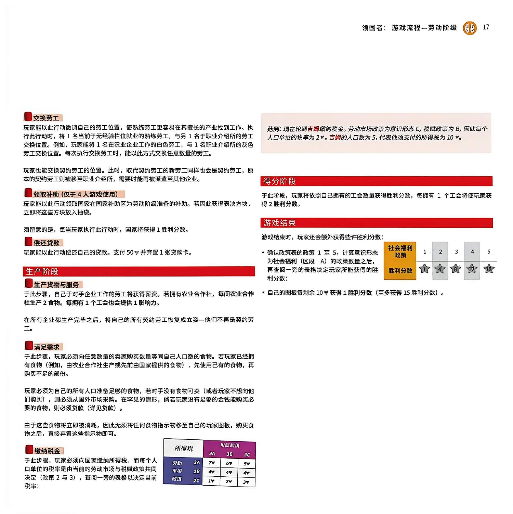
交换劳工
玩家能以此行动微调自己的劳工位置，使熟练劳工更容易在其擅长的产业找到工作。执行此行动时，将 1 名当前于无经验栏位就业的熟练劳工，与另 1 名于职业介绍所的劳工交换位置。例如，玩家能将 1 名在农业企业工作的白色劳工，与 1 名职业介绍所的灰色劳工交换位置。每次执行交换劳工时，能以此方式交换任意数量的劳工。
玩家也能交换契约劳工的位置。此时，取代契约劳工的新劳工同样也会是契约劳工，原本的契约劳工则被移至职业介绍所，需要时能再被派遣至其他企业。
领取补助（仅于 4 人游戏适用）
玩家能以此行动领取国家在国家补助区为劳动阶级准备的补助。若因此获得表决方块，立即将这些方块放入抽袋。
须留意的是，每当玩家执行此行动时，国家将获得 1 胜利分数。
偿还贷款
玩家能以此行动偿还自己的贷款。支付 50𝓥 并弃置 1 张贷款卡。
生产阶段
生产货物与服务
于此步骤，自己于对手企业工作的劳工将获得薪资。若拥有农业合作社，每间农业合作社生产 2 食物。每拥有 1 个工会也会提供 1 影响力。
在所有企业都生产完毕之后，将自己的所有契约劳工恢复成立姿—他们不再是契约劳工。
满足需求
于此步骤，玩家必须向任意数量的卖家购买数量等同自己人口数的食物。若玩家已经拥有食物（例如，由农业合作社生产或先前由国家提供的食物），先使用已有的食物，再购买不足的部份。
玩家必须为自己的所有人口准备足够的食物，若对手没有食物可卖（或者玩家不想向他们购买），则必须从国外市场采购。在罕见的情形，倘若玩家没有足够的金钱能购买必要的食物，则必须贷款（详见贷款）。
由于这些食物将立即被消耗，因此无须将任何食物指示物移至自己的玩家图板，购买食物之后，直接弃置这些指示物即可。
缴纳税金
于此步骤，玩家必须向国家缴纳所得税，而每个人口单位的税率是由当前的劳动市场与税赋政策共同决定（政策 2 与 3），查阅一旁的表格以决定当前税率：
| 所得税 | 3A | 3B | 3C |
|---|---|---|---|
| 阶级 2A | 7𝓥 | 6𝓥 | 5𝓥 |
| 市场 2B | 4𝓥 | 4𝓥 | 4𝓥 |
| 国家 2C | 1𝓥 | 2𝓥 | 3𝓥 |
范例：现在轮到吉姆缴纳税金。劳动市场政策为意识形态 C，税赋政策为 B，因此每个人口单位的税率为 2𝓥。吉姆的人口数为 5，代表他须支付的所得税为 10𝓥。
得分阶段
于此阶段，玩家将依照自己拥有的工会数量获得胜利分数，每拥有 1 个工会将使玩家获得 2 胜利分数。
游戏结束
游戏结束时，玩家还会额外获得些许胜利分数：
- 确认政策表的政策 1 至 5，计算意识形态为社会福利（区段 A）的政策数量之后，再查阅一旁的表格决定玩家所能获得的胜利分数：
| 社会福利政策 | 1 | 2 | 3 | 4 | 5 |
|---|---|---|---|---|---|
| 胜利分数 | ★1 | ★4 | ★8 | ★12 | ★18 |
- 自己的图板每剩余 10𝓥 获得 1 胜利分数（至多获得 15 胜利分数）。
资本阶级
概述
作为资本阶级，玩家的目标是最大化自己的利润。玩家将设立企业、签订商务合约，以生产货物与提供服务，并贩售这些资源赚取利润，同时不断试图增加自己的所得与减少支出。
基础信息：收益与资本
资本阶级的玩家图板有 2 个存放金钱的地方，第一个称为「收益」，另一个则是「资本」。收益代表玩家从事商业活动所赚取而且尚未被课税的金钱。资本则是属于玩家而且曾被课税的金钱。
每当玩家获得金钱时，除非另有指示，否则必须将金钱放在自己的收益。同样地，需要花费金钱时，除非另有指示，否则必须花费收益的金钱。倘若收益的金钱不足以支付所有费用时，则尽可能地以收益支付之后，再以资本支付剩余的费用。同样地，若游戏指示玩家以资本支付费用，但资本的金钱不足时，则以收益支付剩余的费用。于上述两种情况，若收益与资本的金钱皆不足以支付所有费用时，玩家必须背负一次贷款，并将 50𝓥 加入自己的资本（详见贷款）。
准备阶段
于准备阶段，依序执行下述步骤：
支付贷款利息
每拥有 1 张贷款，必须支付 5𝓥 利息。
抽取行动卡
从自己的牌库抽取 5 张行动卡（因此拥有 7 张手牌），这些手牌为秘密信息。
翻开新企业
从自己的市场弃置任意数量的企业卡，并翻开新的卡牌，直到市场拥有 4 张企业卡为止。
抽取商务合约卡与出口卡
确认政策表的对外贸易政策（政策 6）。从图板弃置任意数量的商务合约卡之后，依照当前政策加入指定数量的新卡牌：若当前政策为意识形态 B，加入 1 张商务合约；若为 C，则加入 2 张。接着弃置当前的出口卡，并抽取 1 张新卡牌取代。请留意，此步骤必须于其他 2 个阶级获得新劳工之前完成。
行动阶段
基础行动
资本阶级于自己的回合所能执行的基础行动如下：
提出法案
藉由此行动，玩家表达自己想要改变当前其中一项有效政策，使政策更加贴近自己需求的意愿。
提出 1 道法案时，选择自己想要改变的政策，并在与该政策当前意识形态相邻的区段（亦即与政策标记相邻的区段）放置 1 个自己的法案标记。此即玩家所提出的新法案。
玩家不能选择未与当前意识形态相邻的区段。例如，当前税赋政策采取意识形态 A，则玩家不能将法案标记放在意识形态 C 的位置。此外，玩家不能再对已放有 1 个法案标记的政策提出法案。例如劳动市场为意识形态 B，而对手提出将意识形态更改为 C 的法案，则玩家不能再提出将意识形态更改为 A 的法案。
一般情况下，玩家提出法案之后，暂时不会发生任何改变，所有新法案将于该轮的表决阶段决定通过与否则。然而，玩家在提出法案之后，能立即花费 1 影响力要求即刻表决。此时，将立即针对该政策以及玩家自己的提案进行表决（如何进行表决，详见表决阶段的「进行表决」步骤）。若玩家的提案被通过，立即依照玩家的提案将政策标记移至新的意识形态，并如常颁发胜利分数—而新政策将从此刻起生效。若玩家的提案被否决，则不改变政策标记的位置。表决过后无论法案是否通过，玩家取回自己的法案标记。
玩家拥有 3 个法案标记，这意味着除非玩家要求即刻表决（在表决之后立即取回自己的法案标记），否则不能在同一轮之内提出超过 3 个法案。
设立企业
玩家能以此行动设立企业，生产牟利所需的货物与服务。
设立企业时，从市场选择 1 间企业，（从收益）支付设立费用之后，将该卡牌放在民营部门资本阶级企业区的栏位。接着，在任意的薪资等级上放置 1 个标记，但仍须遵守劳动市场（政策 2）所规定的基本工资。
范例：麦克打算设立新企业，而他的市场上目前有这 4 间企业能选择：
由于 1 他想让新企业立即开始营运，因此虽非必要，但他在选择企业之前查看了职业介绍所的待业劳工。
职业介绍所的劳工能应征其中 3 间企业的所有职缺，因此麦克有相当多的选择。最后，他决定设立科技学会，从收益支付 20𝓥 到供应区之后，将科技学会放在主游戏图板的资本阶级企业区。接着，*麦克派遣 3 名待业劳工到科技学会工作，他先依照该企业其中 2 个劳工栏位的需求拿取 1 名橘色劳工与 1 名灰色劳工，至于第三个劳工栏位，由于职业介绍所已经没有属于劳动阶级的灰色劳工（由于所有劳工必须来自相同阶级，因此他无法拿取中产阶级的灰色劳工），所以他拿取了紫色劳工。
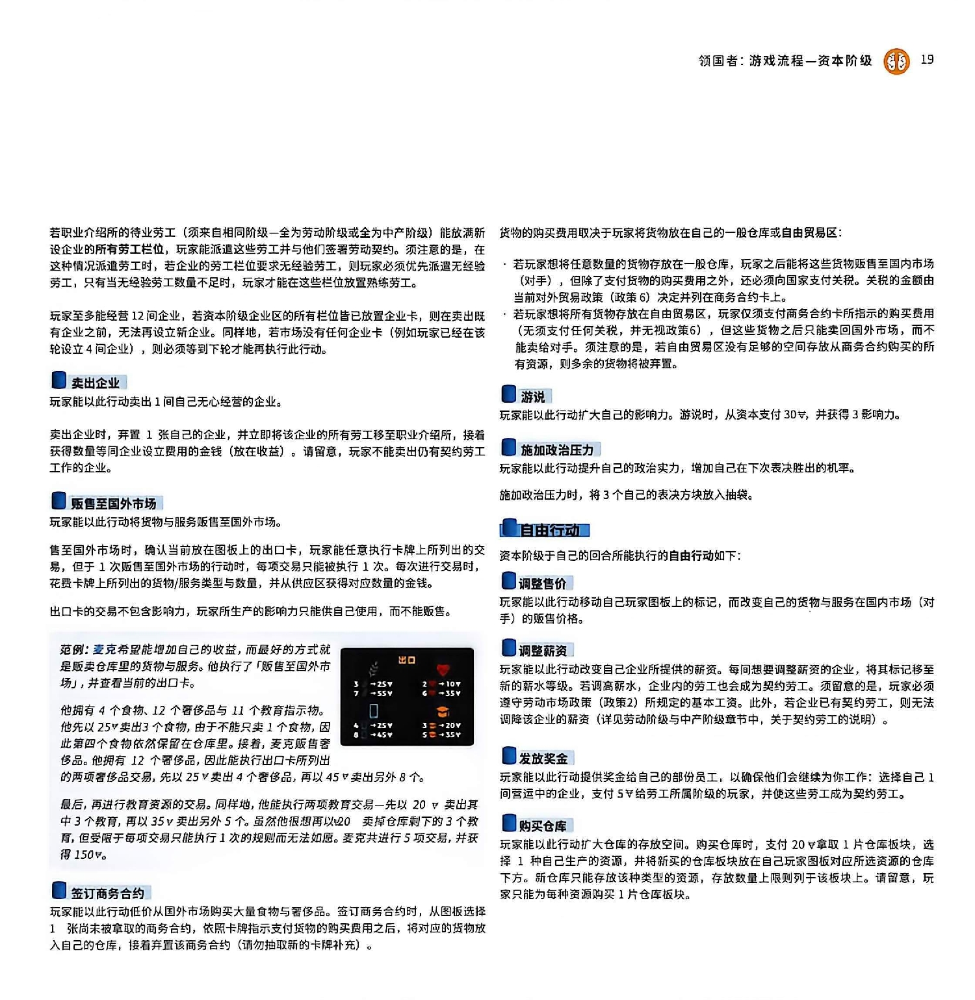
若职业介绍所的待业劳工(须来自相同阶级—全为劳动阶级或全为中产阶级)能放满新设企业的所有劳工栏位，玩家能派遣这些劳工并与他们签署劳动契约。须注意的是，在这种情况派遣劳工时，若企业的劳工栏位要求无经验劳工，则玩家必须优先派遣无经验劳工，只有当无经验劳工数量不足时，玩家才能在这些栏位放置熟练劳工。
玩家至多能经营 12 间企业，若资本阶级企业区的所有栏位皆已放置企业卡，则在卖出既有企业之前，无法再设立新企业。同样地，若市场没有任何企业卡(例如玩家已经在该轮设立 4 间企业)，则必须等到下轮才能再执行此行动。
卖出企业
玩家能以此行动卖出 1 间自己无心经营的企业。
卖出企业时，弃置 1 张自己的企业，并立即将该企业的所有劳工移至职业介绍所，接着获得数量等同企业设立费用的金钱(放在收益)。请留意，玩家不能卖出仍有契约劳工工作的企业。
贩售至国外市场
玩家能以此行动将货物与服务贩售至国外市场。
售至国外市场时，确认当前放在图板上的出口卡，玩家能任意执行卡牌上所列出的交易，但于 1 次贩售至国外市场的行动时，每项交易只能被执行 1 次。每次进行交易时，花费卡牌上所列出的货物/服务类型与数量，并从供应区获得对应数量的金钱。
出口卡的交易不包含影响力，玩家所生产的影响力只能供自己使用，而不能贩售。
范例:麦克希望能增加自己的收益，而最好的方式就是贩卖仓库里的货物与服务。他执行了「贩售至国外市场」，并查看当前的出口卡。
出口卡(出口):
左列 右列 3 → 25𝓥 2 → 10𝓥 7 → 55𝓥 6 → 35𝓥 4 → 25𝓥 3 → 20𝓥 8 → 45𝓥 5 → 35𝓥 他拥有 4 个食物、12 个奢侈品与 11 个教育指示物。他先以 25𝓥 卖出 3 个食物，由于不能只卖 1 个食物，因此第四个食物依然保留在仓库里。接着，麦克贩售奢侈品。他拥有 12 个奢侈品，因此能执行出口卡所列出的两项奢侈品交易，先以 25𝓥 卖出 4 个奢侈品，再以 45𝓥 卖出另外 8 个。
最后，再进行教育资源的交易。同样地，他能执行两项教育交易—先以 20𝓥 卖出其中 3 个教育，再以 35𝓥 卖出另外 5 个。虽然他很想再以 𝓥20 卖掉仓库剩下的 3 个教育，但受限于每项交易只能执行 1 次的规则而无法如愿。麦克共进行 5 项交易，并获得 150𝓥。
签订商务合约
玩家能以此行动低价从国外市场购买大量食物与奢侈品。签订商务合约时，从图板选择 1 张尚未被拿取的商务合约，依照卡牌指示支付货物的购买费用之后，将对应的货物放入自己的仓库，接着弃置该商务合约(请勿抽取新的卡牌补充)。
货物的购买费用取决于玩家将货物放在自己的一般仓库或自由贸易区：
- 若玩家想将任意数量的货物放在一般仓库，玩家之后能将这些货物贩售至国内市场(对手)，但除了支付货物的购买费用之外，还必须向国家支付关税。关税的金额由当前对外贸易政策(政策 6)决定并列在商务合约卡上。
- 若玩家想将所有货物存放在自由贸易区，玩家仅须支付商务合约卡所指示的购买费用(无须支付任何关税，并无视政策6)，但这些货物之后只能卖回国外市场，而不能卖给对手。须注意的是，若自由贸易区没有足够的空间存放从商务合约购买的所有资源，则多余的货物将被弃置。
游说
玩家能以此行动扩大自己的影响力。游说时，从资本支付 30𝓥，并获得 3 影响力。
施加政治压力
玩家能以此行动提升自己的政治实力，增加自己在下次表决胜出的机率。
施加政治压力时，将 3 个自己的表决方块放入抽袋。
自由行动
资本阶级于自己的回合所能执行的自由行动如下：
调整售价
玩家能以此行动移动自己玩家图板上的标记，而改变自己的货物与服务在国内市场(对手)的贩售价格。
调整薪资
玩家能以此行动改变自己所提供的薪资。每间想要调整薪资的企业，将其标记移至新的薪水等级。若调高薪水，企业内的劳工也会成为契约劳工。须留意的是，玩家必须遵守劳动市场政策(政策 2)所规定的基本工资。此外，若企业已有契约劳工，则无法调降该企业的薪资(详见劳动阶级与中产阶级章节中，关于契约劳工的说明)。
发放奖金
玩家能以此行动提供奖金给自己的部份员工，以确保他们会继续为你工作：选择自己 1 间营运中的企业，支付 5𝓥 给劳工所属阶级的玩家，并使这些劳工成为契约劳工。
购买仓库
玩家能以此行动扩大仓库的存放空间。购买仓库时，支付 20𝓥 拿取 1 片仓库板块，选择 1 种自己生产的资源，并将新买的仓库板块放在自己玩家图板对应所选资源的仓库下方。新仓库只能存放该种类型的资源，存放数量上限则列于该板块上。请留意，玩家只能为每种资源购买 1 片仓库板块。
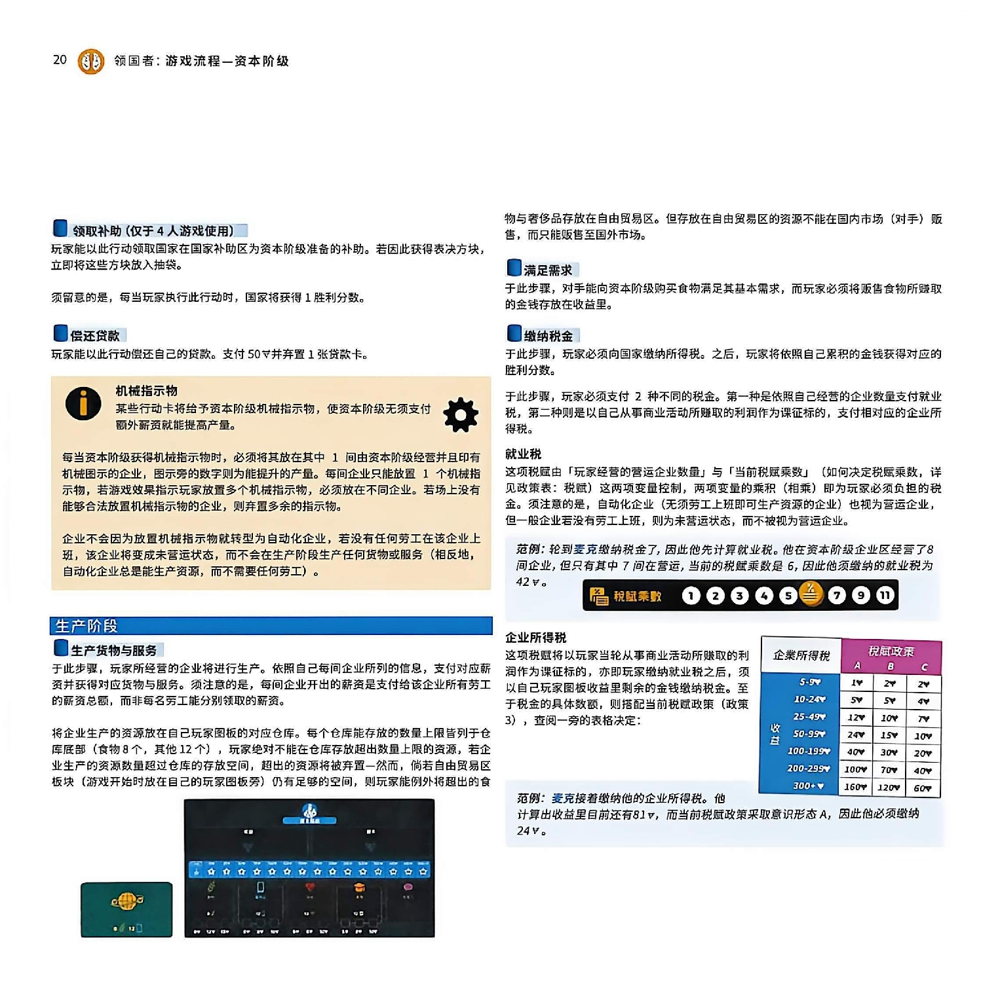
领取补助(仅于 4 人游戏使用)
玩家能以此行动领取国家在国家补助区为资本阶级准备的补助。若因此获得表决方块，立即将这些方块放入抽袋。
须留意的是，每当玩家执行此行动时，国家将获得 1 胜利分数。
偿还贷款
玩家能以此行动偿还自己的贷款。支付 50𝓥 并弃置 1 张贷款卡。
机械指示物
某些行动卡将给予资本阶级机械指示物，使资本阶级无须支付额外薪资就能提高产量。
每当资本阶级获得机械指示物时，必须将其放在其中 1 间由资本阶级经营并且印有机械图示的企业，图示旁的数字则为能提升的产量。每间企业只能放置 1 个机械指示物，若游戏效果指示玩家放置多个机械指示物，必须放在不同企业。若场上没有能够合法放置机械指示物的企业，则弃置多余的指示物。
企业不会因为放置机械指示物就转型为自动化企业，若没有任何劳工在该企业上班，该企业将变成未营运状态，而不会在生产阶段生产任何货物或服务(相反地，自动化企业总是能生产资源，而不需要任何劳工)。
生产阶段
生产货物与服务
于此步骤，玩家所经营的企业将进行生产。依照自己每间企业所列的信息，支付对应薪资并获得对应货物与服务。须注意的是，每间企业开出的薪资是支付给该企业所有劳工的薪资总额，而非每名劳工能分别领取的薪资。
将企业生产的资源放在自己玩家图板的对应仓库。每个仓库能存放的数量上限皆列于仓库底部(食物 8 个，其他 12 个)，玩家绝对不能在仓库存放超出数量上限的资源，若企业生产的资源数量超过仓库的存放空间，超出的资源将被弃置—然而，倘若自由贸易区板块(游戏开始时放在自己的玩家图板旁)仍有足够的空间，则玩家能例外将超出的食物与奢侈品存放在自由贸易区。但存放在自由贸易区的资源不能在国内市场(对手)贩售，而只能贩售至国外市场。
(图示：玩家图板上的薪资轨与资源仓库区域，以及一片仓库板块)
满足需求
于此步骤，对手能向资本阶级购买食物满足其基本需求，而玩家必须将贩售食物所赚取的金钱存放在收益里。
缴纳税金
于此步骤，玩家必须向国家缴纳所得税。之后，玩家将依照自己累积的金钱获得对应的胜利分数。
于此步骤，玩家必须支付 2 种不同的税金。第一种是依照自己经营的企业数量支付就业税，第二种则是以自己从事商业活动所赚取的利润作为课征标的，支付相对应的企业所得税。
就业税
这项税赋由「玩家经营的营运企业数量」与「当前税赋乘数」(如何决定税赋乘数，详见政策表：税赋)这两项变量控制，两项变量的乘积(相乘)即为玩家必须负担的税金。须注意的是，自动化企业(无须劳工上班即可生产资源的企业)也视为营运企业，但一般企业若没有劳工上班，则为未营运状态，而不被视为营运企业。
范例:轮到麦克缴纳税金了，因此他先计算就业税。他在资本阶级企业区经营了 8 间企业，但只有其中 7 间在营运，当前的税赋乘数是 6，因此他须缴纳的就业税为 42𝓥。
「税赋乘数」指示轨：1 2 3 4 5 6 7 9 11(图中标记盖在 6 上)
企业所得税
这项税赋将以玩家当轮从事商业活动所赚取的利润作为课征标的，亦即玩家缴纳就业税之后，须以自己玩家图板收益里剩余的金钱缴纳税金。至于税金的具体数额，则搭配当前税赋政策(政策 3)，查阅一旁的表格决定：
| 企业所得税(收益) | 税赋政策 A | 税赋政策 B | 税赋政策 C |
|---|---|---|---|
| 5-9𝓥 | 1𝓥 | 2𝓥 | 2𝓥 |
| 10-24𝓥 | 5𝓥 | 5𝓥 | 4𝓥 |
| 25-49𝓥 | 12𝓥 | 10𝓥 | 7𝓥 |
| 50-99𝓥 | 24𝓥 | 15𝓥 | 10𝓥 |
| 100-199𝓥 | 40𝓥 | 30𝓥 | 20𝓥 |
| 200-299𝓥 | 100𝓥 | 70𝓥 | 40𝓥 |
| 300+𝓥 | 160𝓥 | 120𝓥 | 60𝓥 |
范例:麦克接着缴纳他的企业所得税。他计算出收益里目前还有 81𝓥，而当前税赋政策采取意识形态 A，因此他必须缴纳 24𝓥。
得分阶段
于此阶段，玩家将依照自己赚取的金钱数量获得对应的胜利分数。
首先，将收益里所有剩余的金钱移至资本，再加总资本里的金钱，接着查阅自己玩家图板的财富表，然后获得对应该资本总额的胜利分数。此外，如果财富标记的位置在当前资本等级的左侧，则将财富标记向右移动至对应位置，每移动 1 格获得 3 胜利分数。
注意：即便之后玩家的资本总额减少，也无须向左移动财富标记，亦不会失去胜利分数，而且玩家依然能于得分阶段获得对应当前资本总额的胜利分数，只是不会获得移动财富标记所提供的额外奖励。
范例：于第 1 轮，在缴纳税金并将金钱从收益移至资本之后，麦克的资本总额为 57𝓥。查看财富表之后，当前的资本总额使他获得 3 胜利分数。由于这是第一次得分阶段，他将财富标记向右移动 3 格，因此他能再获得 9 胜利分数（每移动 1 格获得 3 胜利分数）。于此得分阶段，麦克共获得 12 胜利分数。
〔图：玩家图板财富表轨道（麦克的标记位于左端附近）〕
游戏持续进行到第 2 轮的得分阶段，而他的资本总额只剩 34𝓥。对照财富表之后，他获得了 2 胜利分数。由于实际资本总额的位置位于财富标记的左侧，因此他不能移动财富标记，也无法获得移动标记的额外奖励。
于第 3 轮，麦克的资本总额达到 166𝓥，依照财富表他能获得 7 胜利分数。此外，他还能将财富标记向右移动 4 格，而获得额外 12 胜利分数。于此得分阶段，麦克共获得 19 胜利分数。
〔图：玩家图板财富表轨道（麦克的标记位于轨道中部）〕
游戏结束
游戏结束时，玩家还会额外获得些许胜利分数：
- 确认政策表的政策 1 至 5，计算意识形态为新自由主义（C）的政策数量之后，再查阅一旁的表格决定玩家所能获得的胜利分数：
| 新自由主义政策 | 1 | 2 | 3 | 4 | 5 |
|---|---|---|---|---|---|
| 胜利分数 | ★〔?〕 | ★〔?〕 | ★〔?〕 | ★〔?〕 | ★〔?〕 |
- 自己的仓库（包含自由贸易区）每剩余 2 🌾 / 3 ▢ / 3 ♥ / 3 🎓，获得 1 胜利分数。
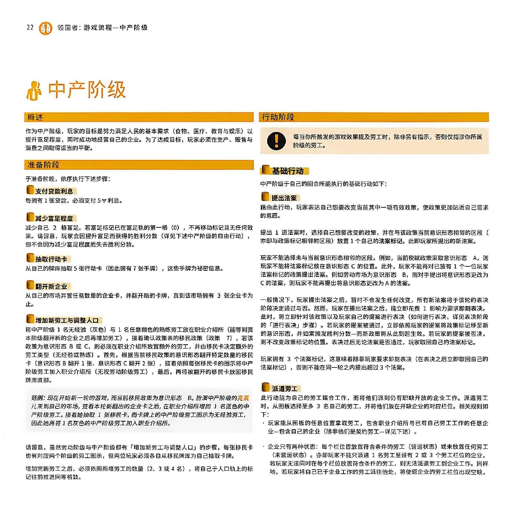
中产阶级
概述
作为中产阶级，玩家的目标是努力满足人民的基本需求（食物、医疗、教育与娱乐）以提升富足程度，同时成功地经营自己的企业。为了达成目标，玩家必须在生产、贩售与消费之间取得适当的平衡。
准备阶段
于准备阶段，依序执行下述步骤：
支付贷款利息
每拥有 1 张贷款，必须支付 5𝓥 利息。
减少富足程度
减少自己 2 格富足。若富足标记已在富足轨的第一格（0），不再移动标记且无任何效果。请留意，玩家会因提升富足而获得的胜利分数（详见下述中产阶级的自由行动），但不会因为减少富足程度而失去胜利分数。
抽取行动卡
从自己的牌库抽取 5 张行动卡（因此拥有 7 张手牌），这些手牌为秘密信息。
开设新企业
从自己的市场弃置任意数量的企业卡，并翻开新的卡牌，直到该市场拥有 3 张企业卡为止。
增加新劳工与调整人口
将中产阶级 1 名无经验（灰色）与 1 名任意颜色的熟练劳工放在职业介绍所（能等到资本阶级翻开新的企业之后再增加劳工），接着确认政策表的移民政策（政策 7），若该政策为意识形态 B 或 C，则必须在职业介绍所放置额外的劳工，并由移民卡决定额外的劳工类型（无经验或熟练）。首先，根据当前移民政策的意识形态翻开特定数量的移民卡（意识形态 B 翻开 1 张、意识形态 C 翻开 2 张），接着依照每张移民卡的图示将中产阶级劳工加入职业介绍所（无视劳动阶级劳工），最后，再将被翻开的移民卡放回移民牌库底部。
范例：现在开始新一轮的游戏，而当前移民政策为意识形态 B。扮演中产阶级的克莱儿来到自己的市场，查看本轮新翻出的企业卡之后，在职业介绍所增加 1 名蓝色的中产阶级劳工。接着她抽取 1 张移民卡，而卡牌上的中产阶级劳工图示为无经验劳工，因此她再将 1 名灰色的中产阶级劳工加入职业介绍所。
请留意，虽然劳动阶级与中产阶级都有「增加新劳工与调整人口」的步骤，每张移民卡也有对应两个阶级的劳工图示，但两位玩家必须各自从移民牌库为自己抽取卡牌。
增加完新劳工之后，必须依照新增劳工的数量（2、3 或 4 名），将自己于人口轨上的标记往前进同等格数。
行动阶段
！ 每当你所触发的游戏效果提及劳工时，除非另有指示，否则仅指涉你所属阶级的劳工。
基础行动
中产阶级于自己的回合所能执行的基础行动如下：
提出法案
藉由此行动，玩家表达自己想要改变当前其中一项有效政策，使政策更加贴近自己需求的意愿。
提出 1 道法案时，选择自己想要改变的政策，并在与该政策当前意识形态相邻的区段（亦即与政策标记相邻的区段）放置 1 个自己的法案标记。此即玩家所提出的新法案。
玩家不能选择未与当前意识形态相邻的区段。例如，当前税赋政策采取意识形态 A，则玩家不能将法案标记放在意识形态 C 的位置。此外，玩家不能再对已放有 1 个一位玩家法案标记的政策提出法案。例如劳动市场为意识形态 B，而对手提出将意识形态更改为 C 的法案，则玩家不能再提出将意识形态更改为 A 的法案。
一般情况下，玩家提出法案之后，暂时不会发生任何改变，所有新法案将于该轮的表决阶段决定通过与否。然而，玩家在提出法案之后，能立即花费 1 影响力要求即刻表决。此时，将立即针对该政策以及玩家自己的提案进行表决（如何进行表决，详见表决阶段的「进行表决」步骤）。若玩家的提案被通过，立即依照玩家的提案将政策标记移至新的意识形态，并如常颁发胜利分数—而新政策将从此刻起生效。若玩家的提案被否决，则不改变政策标记的位置。表决过后无论法案是否通过，玩家取回自己的法案标记。
玩家拥有 3 个法案标记，这意味着除非玩家要求即刻表决（在表决之后立即取回自己的法案标记），否则不能在同一轮之内提出超过 3 个法案。
派遣劳工
此行动能为自己的劳工媒合工作，而将他们派到仍有职缺开放的企业工作。派遣劳工时，从图板选择至多 3 名自己的劳工，并将他们放在开缺企业的对应栏位。相关规则如下：
- 玩家能从图板的任意位置拿取劳工，包含职业介绍所与已有自己劳工工作的任意企业—包含自己的企业（除非他们是契约劳工—详见下述）。
- 企业只有两种状态：每个栏位皆放置符合条件的劳工（营运状态）或未放置任何劳工（未营运状态）。亦即玩家不能只派遣 1 名劳工至设有 2 或 3 个劳工栏位的企业，若玩家无法同时在每个栏位放置符合条件的劳工，则无法派遣劳工到企业工作。同样地，若玩家将自己已于企业工作的劳工派往他处，将使原企业的劳工栏位出现空缺，而必须将该企业其余的劳工立即移至职业介绍所(请注意，于整个派遣劳工行动完成之后，才须确认企业栏位是否出现空缺。这意味着玩家能将原企业的劳工派往他处之后，再将另一名符合条件的劳工派回原企业填补空缺)。
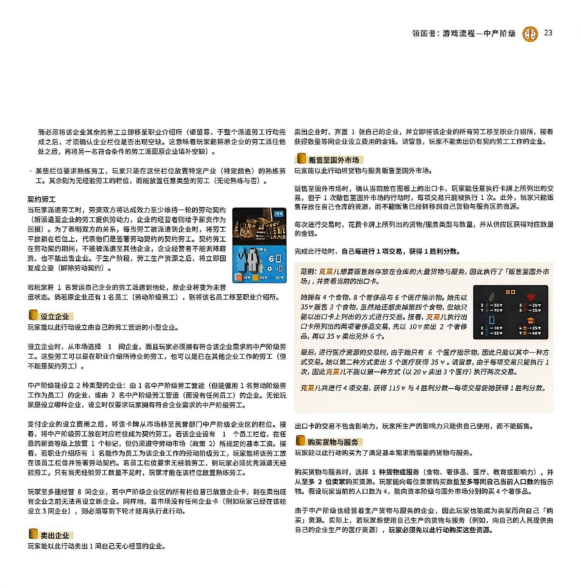
- 某些栏位要求熟练劳工，玩家只能在这些栏位放置特定产业(特定颜色)的熟练劳工，其余则为无经验劳工的栏位，而能放置任意类型的劳工(无论熟练与否)。
契约劳工
当玩家派遣劳工时，劳资双方将达成效力至少维持一轮的劳动契约(新派遣至企业的劳工提供劳动力，企业的经营者则给予薪资作为回报)。为了表明双方的关系，每当劳工被派遣到企业时，将劳工平放置在栏位上，代表他们是签署劳动契约的契约劳工。契约劳工在劳动契约期间，不能被派遣至其他企业，企业经营者不能调降薪资、也不能出售企业。于生产阶段，劳工生产资源之后，将立即回复成立姿(解除劳动契约)。
若玩家将 1 名营运自己企业的劳工派遣到他处，原企业将变为未营运状态。倘若原企业还有 1 名员工(劳动阶级劳工)，则将该名员工移至职业介绍所。
设立企业
玩家能以此行动设立由自己的劳工营运的小型企业。
设立企业时，从市场选择 1 间企业，而且玩家必须拥有符合该企业需求的中产阶级劳工。这些劳工可以是在职业介绍所待业的劳工，也可以是已在其他企业工作的劳工(但不能是契约劳工)。
中产阶级能设立 2 种类型的企业：由 1 名中产阶级劳工营运(但能雇用 1 名劳动阶级劳工作为员工)的企业，或由 2 名中产阶级劳工营运(而没有任何员工)的企业。无论玩家是设立哪种企业，设立时仅要求玩家拥有符合企业需求的中产阶级劳工。
支付企业的设立费用之后，将该卡牌从市场移至民营部门中产阶级企业区的栏位。接着，将中产阶级劳工放在对应栏位成为契约劳工。若该企业设有 1 个员工栏位，在任意的薪资等级上放置 1 个标记，但仍须遵守劳动市场(政策 2)所规定的基本工资。接着，若职业介绍所有 1 名能作为员工为该企业工作的劳动阶级劳工，玩家能将该劳工放在该员工栏位并签署劳动契约。若员工栏位要求无经验劳工，则玩家必须优先派遣无经验劳工，只有当无经验劳工数量不足时，玩家才能在该栏位放置熟练劳工。
玩家至多能经营 8 间企业，若中产阶级企业区的所有栏位皆已放置企业卡，则在卖出既有企业之前无法再设立新企业。同样地，若市场没有任何企业卡(例如玩家已经在该轮设立 3 间企业)，则必须等到下轮才能再次执行此行动。
卖出企业
玩家能以此行动卖出 1 间自己无心经营的企业。
卖出企业时，弃置 1 张自己的企业，并立即将该企业的所有劳工移至职业介绍所，接着获得数量等同企业设立费用的金钱。请留意，玩家不能卖出仍有契约劳工工作的企业。
贩售至国外市场
玩家能以此行动将货物与服务贩售至国外市场。
贩售至国外市场时，确认当前放在图板上的出口卡，玩家能任意执行卡牌上所列出的交易。但于 1 次贩售至国外市场的行动时，每项交易只能被执行 1 次。此外，玩家只能贩售存放在自己仓库的资源，而不能贩售已经转移到自己货物与服务区的资源。
每次进行交易时，花费卡牌上所列出的货物/服务类型与数量，并从供应区获得对应数量的金钱。
完成此行动时，自己每进行 1 项交易，获得 1 胜利分数。
范例：克莱儿想要贩售她存放在仓库的大量货物与服务，因此执行了「贩售至国外市场」，并查看当前的出口卡。
她拥有 4 个食物、8 个奢侈品与 6 个医疗指示物。她先以 35𝓥 贩售 3 个食物，虽然她还想要卖掉第四个食物，但她只能以出口卡上列出的方式进行交易。接着，克莱儿执行出口卡所列出的两项奢侈品交易，先以 10𝓥 卖出 2 个奢侈品，再以 35𝓥 卖出另外 6 个。
最后，进行医疗资源的交易时，由于她只有 6 个医疗指示物，因此只能以其中一种方式交易。她以第二种方式卖出 5 个医疗获得 35𝓥。请留意，由于每项交易只能执行 1 次，因此克莱儿不能以第一种方式(以 20𝓥 卖出 3 个医疗)执行两次交易。
克莱儿共进行 4 项交易，获得 115𝓥 与 4 胜利分数—每项交易使她获得 1 胜利分数。
〔图：范例中的出口卡——食物 3→35𝓥、7→75𝓥;医疗 3→20𝓥、5→35𝓥;奢侈品 2→10𝓥、6→35𝓥;教育 4→25𝓥、7→40𝓥〕
出口卡的交易不包含影响力，玩家所生产的影响力只能供自己使用，而不能贩售。
购买货物与服务
玩家能以此行动购买为了满足基本需求而需要的货物与服务。
购买货物与服务时，选择 1 种货物或服务(食物、奢侈品、医疗、教育或影响力)，并从至多 2 位卖家购买资源。玩家能向每位卖家购买数量至多等同自己当前人口数的指示物。假设玩家当前的人口数为 4，能向资本阶级与国外市场分别购买 4 个奢侈品。
由于中产阶级也经营着生产货物与服务的企业，因此玩家也能成为卖家而向自己「购买」资源。实际上，若玩家想使用自己生产的货物与服务(例如，向自己的人民提供由自己的企业生产的医疗资源)，玩家必须先以此行动购买这些资源。
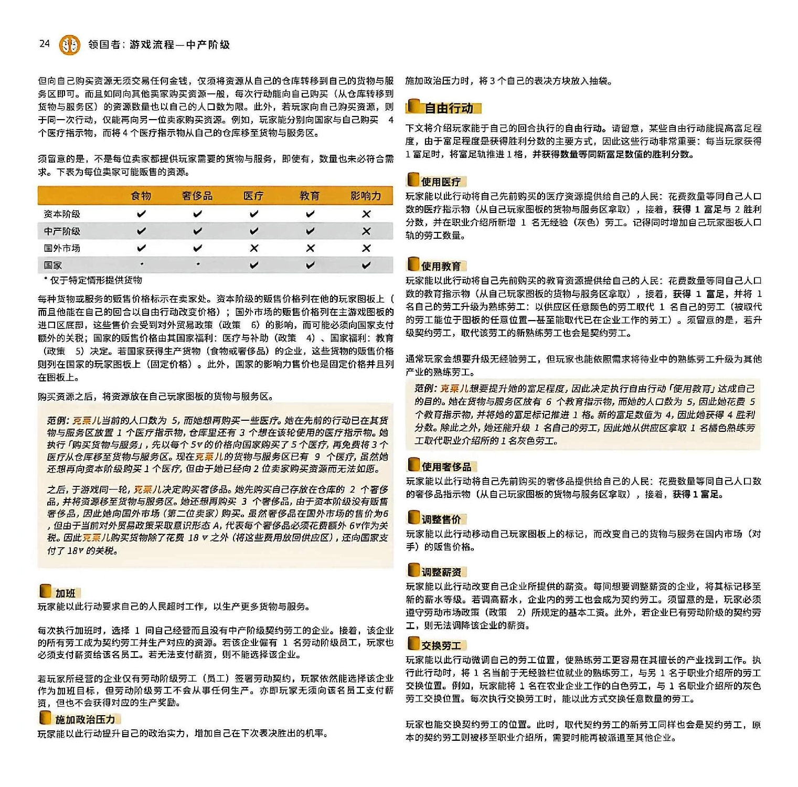
但向自己购买资源无须交易任何金钱，仅须将资源从自己的仓库转移到自己的货物与服务区即可。而且如同向其他卖家购买资源一般，每次行动能向自己购买(从仓库转移到货物与服务区)的资源数量也以自己的人口数为限。此外，若玩家向自己购买资源，则于同一次行动，仅能再向另一位卖家购买资源。例如，玩家能分别向国家与自己购买 4 个医疗指示物，而将 4 个医疗指示物从自己的仓库移至货物与服务区。
须留意的是，不是每位卖家都提供玩家需要的货物与服务，即使有，数量也未必符合需求。下表为每位卖家可能贩售的资源。
| 食物 | 奢侈品 | 医疗 | 教育 | 影响力 | |
|---|---|---|---|---|---|
| 资本阶级 | ✓ | ✓ | ✓ | ✓ | × |
| 中产阶级 | ✓ | ✓ | ✓ | ✓ | × |
| 国外市场 | ✓ | ✓ | × | × | × |
| 国家 | · | · | ✓ | ✓ | ✓ |
＊ 仅于特定情形提供货物
每种货物或服务的贩售价格标示在卖家处。资本阶级的贩售价格列在他的玩家图板上(而且他能在自己的回合以自由行动改变价格);国外市场的贩售价格列在主游戏图板的进口区底部，这些售价会受到对外贸易政策(政策 6)的影响，而可能必须向国家支付额外的关税;国家的贩售价格由其国家福利：医疗与补助(政策 4)、国家福利：教育(政策 5)决定。若国家获得生产货物(食物或奢侈品)的企业，这些货物的贩售价格则列在国家的玩家图板上(固定价格)。此外，国家的影响力售价也是固定价格并且列在图板上。
购买资源之后，将资源放在自己玩家图板的货物与服务区。
范例：克莱儿当前的人口数为 5，而她想再购买一些医疗。她在先前的行动已在货物与服务区放置 1 个医疗指示物，仓库里还有 3 个想在该轮使用的医疗指示物。她执行「购买货物与服务」，先以每个 5𝓥 的价格向国家购买了 5 个医疗，再免费将 3 个医疗从仓库移至货物与服务区。现在克莱儿的货物与服务区已有 9 个医疗，虽然她还想要再向资本阶级购买 1 个医疗，但由于她已经向 2 位卖家购买资源而无法如愿。
之后，于游戏同一轮，克莱儿决定购买奢侈品。她先购买自己存放在仓库的 2 个奢侈品，并将资源移至货物与服务区。她还想再购买 3 个奢侈品，由于资本阶级没有贩售奢侈品，因此她向国外市场(第二位卖家)购买。虽然奢侈品在国外市场的售价为 6，但由于当前对外贸易政策采取意识形态 A，代表每个奢侈品必须花费额外 6𝓥 作为关税。因此克莱儿购买货物除了花费 18𝓥 之外(将这些费用放回供应区)，还向国家支付了 18𝓥 的关税。
加班
玩家能以此行动要求自己的人民超时工作，以生产更多货物与服务。
每次执行加班时，选择 1 间自己经营而且没有中产阶级契约劳工的企业。接着，该企业的所有劳工成为契约劳工并生产对应的资源。若该企业雇有 1 名劳动阶级员工，玩家也必须支付薪资给该名员工。若无法支付薪资，则不能选择该企业。
若玩家所经营的企业仅有劳动阶级劳工(员工)签署劳动契约，玩家依然能选择该企业作为加班目标，但劳动阶级劳工不会从事任何生产。亦即玩家无须向该名员工支付薪资，但也不会获得对应的生产奖励。
施加政治压力
玩家能以此行动提升自己的政治实力，增加自己在下次表决胜出的机率。
施加政治压力时，将 3 个自己的表决方块放入抽袋。
自由行动
下文将介绍玩家能于自己的回合执行的自由行动。请留意，某些自由行动能提高富足程度，由于富足程度是获得胜利分数的主要方式，因此这些行动非常重要：每当玩家获得 1 富足时，将富足轨推进 1 格，并获得数量等同新富足数值的胜利分数。
使用医疗
玩家能以此行动将自己先前购买的医疗资源提供给自己的人民：花费数量等同自己人口数的医疗指示物(从自己玩家图板的货物与服务区拿取)，接着，获得 1 富足与 2 胜利分数，并在职业介绍所新增 1 名无经验(灰色)劳工。记得同时增加自己玩家图板人口轨的劳工数量。
使用教育
玩家能以此行动将自己先前购买的教育资源提供给自己的人民：花费数量等同自己人口数的教育指示物(从自己玩家图板的货物与服务区拿取)，接着，获得 1 富足，并将 1 名自己的劳工升级为熟练劳工：以供应区任意颜色的劳工取代 1 名自己的劳工(被取代的劳工能位于图板的任意位置—甚至能取代已在企业工作的劳工)。须留意的是，若升级契约劳工，取代该劳工的新熟练劳工也会是契约劳工。
通常玩家会想要升级无经验劳工，但玩家也能依照需求将待业中的熟练劳工升级为其他产业的熟练劳工。
范例：克莱儿想要提升她的富足程度，因此决定执行自由行动「使用教育」达成自己的目的。她在货物与服务区放有 6 个教育指示物，而她的人口数为 5，因此她花费 5 个教育指示物，并将她的富足标记推进 1 格。新的富足数值为 4，因此她获得 4 胜利分数。除此之外，她还能升级 1 名自己的劳工，因此她从供应区拿取 1 名橘色熟练劳工取代职业介绍所的 1 名灰色劳工。
使用奢侈品
玩家能以此行动将自己先前购买的奢侈品提供给自己的人民：花费数量等同自己人口数的奢侈品指示物(从自己玩家图板的货物与服务区拿取)，接着，获得 1 富足。
调整售价
玩家能以此行动移动自己玩家图板上的标记，而改变自己的货物与服务在国内市场(对手)的贩售价格。
调整薪资
玩家能以此行动改变自己企业所提供的薪资。每间想要调整薪资的企业，将其标记移至新的薪水等级。若调高薪水，企业内的劳工也会成为契约劳工。须留意的是，玩家必须遵守劳动市场政策(政策 2)所规定的基本工资。此外，若企业已有劳动阶级的契约劳工，则无法调降该企业的薪资。
交换劳工
玩家能以此行动微调自己的劳工位置，使熟练劳工更容易在其擅长的产业找到工作。执行此行动时，将 1 名当前于无经验栏位就业的熟练劳工，与另 1 名于职业介绍所的劳工交换位置。例如，玩家能将 1 名在农业企业工作的白色劳工，与 1 名职业介绍所的灰色劳工交换位置。每次执行交换劳工时，能以此方式交换任意数量的劳工。
玩家也能交换契约劳工的位置。此时，取代契约劳工的新劳工同样也会是契约劳工，原本的契约劳工则被移至职业介绍所，需要时能再被派遣至其他企业。
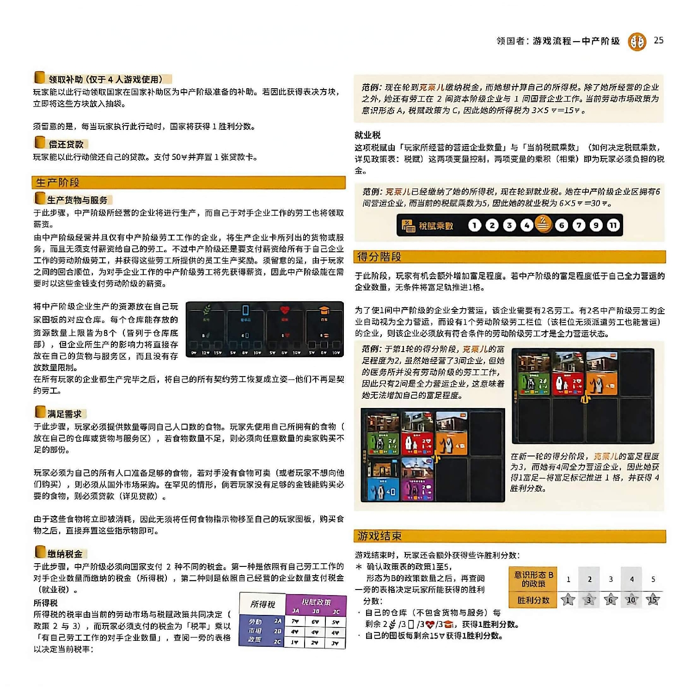
领取补助(仅于 4 人游戏使用)
玩家能以此行动领取国家在国家补助区为中产阶级准备的补助。若因此获得表决方块，立即将这些方块放入抽袋。
须留意的是，每当玩家执行此行动时，国家将获得 1 胜利分数。
偿还贷款
玩家能以此行动偿还自己的贷款。支付 50𝓥 并弃置 1 张贷款卡。
生产阶段
生产货物与服务
于此步骤，中产阶级所经营的企业将进行生产，而自己于对手企业工作的劳工也将领取薪资。
由中产阶级经营并且仅有中产阶级劳工工作的企业，将生产企业卡所列出的货物或服务，而且无须支付薪资给自己的劳工。不过中产阶级还是要支付薪资给所有于自己企业工作的劳动阶级劳工，并获得这些劳工所提供的员工生产奖励。须留意的是，由于玩家之间的回合顺位，为对手企业工作的中产阶级劳工将先获得薪资，因此中产阶级能在需要时以这些金钱支付劳动阶级的薪资。
将中产阶级企业生产的资源放在自己玩家图板的对应仓库。每个仓库能存放的资源数量上限皆为8个(皆列于仓库底部)，但企业所生产的影响力将直接存放在自己的货物与服务区，而且没有存放数量限制。
〔图：玩家图板上的四个资源仓库示意〕
在所有玩家的企业都生产完毕之后，将自己的所有契约劳工恢复成立姿—他们不再是契约劳工。
满足需求
于此步骤，玩家必须提供数量等同自己人口数的食物。玩家先使用自己所拥有的食物(放在自己的仓库或货物与服务区)，若食物数量不足，则必须向任意数量的卖家购买不足的部份。
玩家必须为自己的所有人口准备足够的食物，若对手没有食物可卖(或者玩家不想向他们购买)，则必须从国外市场采购。在罕见的情形，倘若玩家没有足够的金钱能购买必要的食物，则必须贷款(详见贷款)。
由于这些食物将立即被消耗，因此无须将任何食物指示物移至自己的玩家图板，购买食物之后，直接弃置这些指示物即可。
缴纳税收
于此步骤，中产阶级必须向国家支付 2 种不同的税金。第一种是依照有自己劳工工作的对手企业数量而缴纳的税金(所得税)，第二种则是依照自己经营的企业数量支付税金(就业税)。
所得税
所得税的税率由当前的劳动市场与税赋政策共同决定(政策 2 与 3)，而玩家必须支付的税金为「税率」乘以「有自己劳工工作的对手企业数量」，查阅一旁的表格以决定当前税率：
| 所得税 | 税赋政策 3A | 3B | 3C |
|---|---|---|---|
| 劳动市场政策 2A | 7𝓥 | 6𝓥 | 5𝓥 |
| 2B | 4𝓥 | 4𝓥 | 4𝓥 |
| 2C | 1𝓥 | 2𝓥 | 3𝓥 |
范例： 现在轮到克莱儿缴纳税金，而她想计算自己的所得税。除了她所经营的企业之外，她还有劳工在 2 间资本阶级企业与 1 间国营企业工作。当前劳动市场政策为意识形态 A，税赋政策为 C，因此她的所得税为 3×5𝓥=15𝓥。
就业税
这项税赋由「玩家所经营的营运企业数量」与「当前税赋乘数」(如何决定税赋乘数，详见政策表：税赋)这两项变量控制，两项变量的乘积(相乘)即为玩家必须负担的税金。
范例： 克莱儿已经缴纳了她的所得税，现在轮到就业税。她在中产阶级企业区拥有6间营运企业，而当前的税赋乘数为5，因此她的就业税为 6×5𝓥=30𝓥。
〔图：税赋乘数轨道：1 2 3 4 〔乘数标记〕 6 7 9 11〕
得分阶段
于此阶段，玩家有机会额外增加富足程度。若中产阶级的富足程度低于自己全力营运的企业数量，无条件将富足轨推进1格。
为了使1间中产阶级的企业全力营运，该企业需要有2名劳工。有2名中产阶级劳工的企业自动视为全力营运，而设有1个劳动阶级劳工栏位(该栏位无须派遣劳工也能营运)的企业，则该企业必须放有符合条件的劳动阶级劳工才是全力营运状态。
范例： 于第1轮的得分阶段，克莱儿的富足程度为2，虽然她经营了3间企业，但她的医务所并没有劳动阶级的劳工工作，因此只有2间是全力营运企业，这意味着她无法增加自己的富足程度。
〔图：克莱儿玩家图板的企业区〕
在新一轮的得分阶段，克莱儿的富足程度为3，而她有4间全力营运企业，因此她获得1富足—将富足标记推进 1 格，并获得 4 胜利分数。
游戏结束
游戏结束时，玩家还会额外获得些许胜利分数：
- 确认政策表的政策1至5，形态为B的政策数量之后，再查阅一旁的表格决定玩家所能获得的胜利分数：
| 意识形态 B 的政策 | 1 | 2 | 3 | 4 | 5 |
|---|---|---|---|---|---|
| 胜利分数 | 1 | 3 | 6 | 10 | 15 |
- 自己的仓库(不包含货物与服务)每剩余 2 〔图标：麦穗〕 /3 〔图标：方框〕 /3 〔图标：红心〕 /3 〔图标：学士帽〕，获得1胜利分数。
- 自己的图板每剩余15𝓥获得1胜利分数。
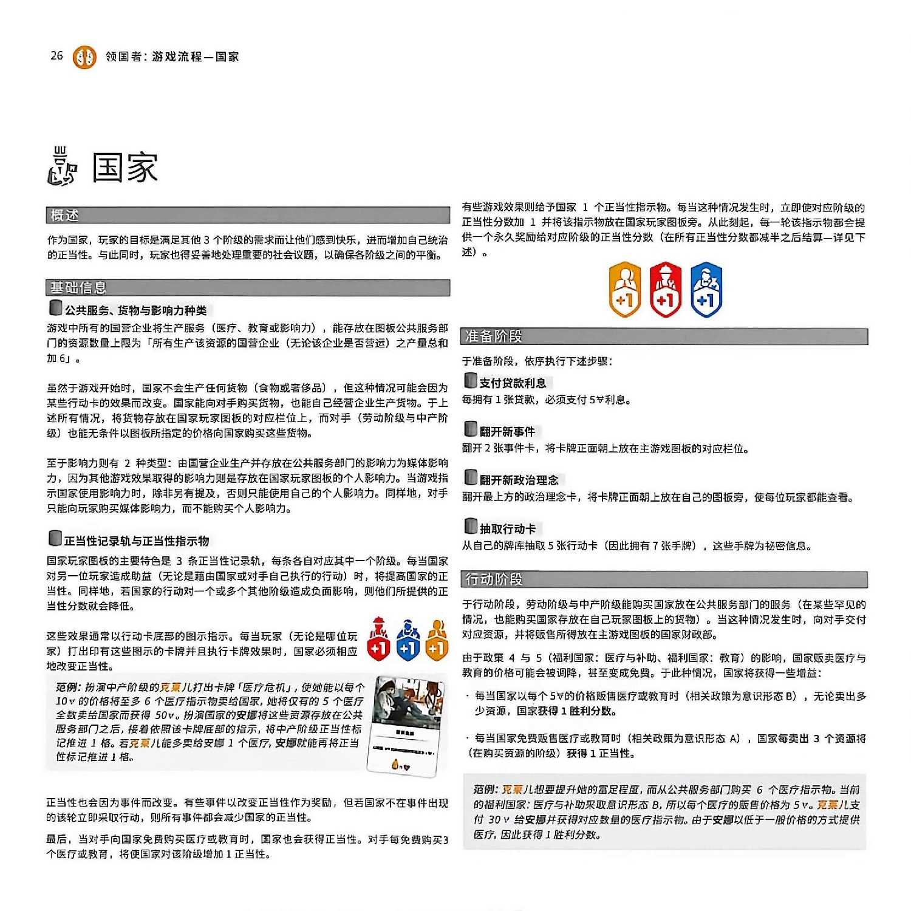
国家
概述
作为国家，玩家的目标是满足其他 3 个阶级的需求而让他们感到快乐，进而增加自己统治的正当性。与此同时，玩家也得妥善地处理重要的社会议题，以确保各阶级之间的平衡。
基础信息
公共服务、货物与影响力种类
游戏中所有的国营企业将生产服务(医疗、教育或影响力)，能存放在图板公共服务部门的资源数量上限为「所有生产该资源的国营企业(无论该企业是否营运)之产量总和加 6」。
虽然于游戏开始时，国家不会生产任何货物(食物或奢侈品)，但这种情况可能会因为某些行动卡的效果而改变。国家能向对手购买货物，也能自己经营企业生产货物。于上述所有情况，将货物存放在国家玩家图板的对应栏位上，而对手(劳动阶级与中产阶级)也能无条件以图板所指定的价格向国家购买这些货物。
至于影响力则有 2 种类型：由国营企业生产并存放在公共服务部门的影响力为媒体影响力，因为其他游戏效果取得的影响力则是存放在国家玩家图板的个人影响力。当游戏指示国家使用影响力时，除非另有提及，否则只能使用自己的个人影响力。同样地，对手只能向玩家购买媒体影响力，而不能购买个人影响力。
正当性记录轨与正当性指示物
国家玩家图板的主要特色是 3 条正当性记录轨，每条各自对应其中一个阶级。每当国家对另一位玩家造成助益(无论是藉由国家或对手自己执行的行动)时，将提高国家的正当性。同样地，若国家的行动对一个或多个其他阶级造成负面影响，则他们所提供的正当性分数就会降低。
这些效果通常以行动卡底部的图示指示。每当玩家(无论是哪位玩家)打出印有这些图示的卡牌并且执行卡牌效果时，国家必须相应地改变正当性。
〔图：三个 +1 正当性指示物盾牌图示〕
范例： 扮演中产阶级的克莱儿打出卡牌「医疗危机」，使她能以每个 10𝓥 的价格将至多 6 个医疗指示物卖给国家，她将仅有的 5 个医疗全数卖给国家而获得 50𝓥。扮演国家的安娜将这些资源存放在公共服务部门之后，接着依照该卡牌底部的指示，将中产阶级正当性标记推进 1 格。若克莱儿能多卖给安娜 1 个医疗，安娜就能再将正当性标记推进 1 格。
〔图：「医疗危机」卡牌〕
正当性也会因为事件而改变。有些事件以改变正当性作为奖励，但若国家不在事件出现的该轮立即采取行动，则所有事件都会减少国家的正当性。
最后，当对手向国家免费购买医疗或教育时，国家也会获得正当性。对手每免费购买3个医疗或教育，将使国家对该阶级增加 1 正当性。
有些游戏效果则给予国家 1 个正当性指示物。每当这种情况发生时，立即使对应阶级的正当性分数加 1 并将该指示物放在国家玩家图板旁。从此刻起，每一轮该指示物都会提供一个永久奖励给对应阶级的正当性分数(在所有正当性分数都减半之后结算—详见下述)。
〔图：橙、红、蓝三个 +1 盾牌图示〕
准备阶段
于准备阶段，依序执行下述步骤：
支付贷款利息
每拥有 1 张贷款，必须支付 5𝓥 利息。
翻开新事件
翻开 2 张事件卡，将卡牌正面朝上放在主游戏图板的对应栏位。
翻开新政治理念
翻开最上方的政治理念卡，将卡牌正面朝上放在自己的图板旁，使每位玩家都能查看。
抽取行动卡
从自己的牌库抽取 5 张行动卡(因此拥有 7 张手牌)。这些手牌为秘密信息。
行动阶段
于行动阶段，劳动阶级与中产阶级能购买国家放在公共服务部门的服务(在某些罕见的情况，也能购买国家存放在自己玩家图板上的货物)。当这种情况发生时，向对手交付对应资源，并将贩卖所得放在主游戏图板的国家财政部。
由于政策 4 与 5(福利国家：医疗与补助、福利国家：教育)的影响，国家贩卖医疗与教育的价格可能会被调降，甚至变成免费。于此种情况，国家将获得一些增益：
- 每当国家以每个 5𝓥 的价格贩售医疗或教育时(相关政策为意识形态 B)，无论卖出多少资源，国家获得 1 胜利分数。
- 每当国家免费贩售医疗或教育时(相关政策为意识形态 A)，国家每卖出 3 个资源将(在购买资源的阶级)获得 1 正当性。
范例： 克莱儿想要提升她的富足程度，而从公共服务部门购买 6 个医疗指示物。当前的福利国家：医疗与补助采取意识形态 B，所以每个医疗的贩售价格为 5𝓥。克莱儿支付 30𝓥 给安娜并获得对应数量的医疗指示物。由于安娜以低于一般价格的方式提供医疗，因此获得1胜利分数。
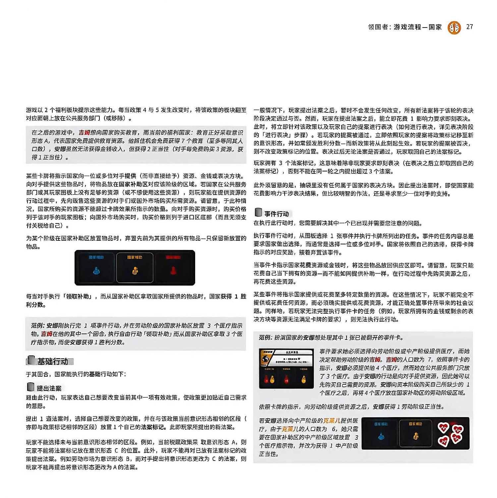
游戏以 2 个福利板块提示这些能力。每当政策 4 与 5 发生改变时，将该政策的板块翻至对应面朝上放在公共服务部门（或移除）。
范例：在之后的游戏中，吉姆想向国家购买教育，而当前的福利国家：教育正好采取意识形态 A，代表国家免费提供教育资源。他抓住机会免费获得 7 个教育（至多等同其人口数），安娜虽然无法获得金钱收入，但获得 2 正当性（对手每免费购买 3 资源，获得 1 正当性）。
某些卡牌将指示国家向一位或多位对手提供（而非直接给予）资源、金钱或表决方块。向对手提供这些物品时，将物品放在国家补助区对应该阶级的区域。若国家在公共服务部门或其玩家图板上没有足够的资源（或不想使用这些资源），则玩家能在提供资源的行动过程中，先向贩售这些资源的对手们或国外市场购买所需资源。请留意，于此种情况，国家所购买的资源不能超过卡牌效果所指示的数量。向对手购买资源时，购买价格列于该对手的玩家图板；向国外市场购买时，购买价格则列于进口区底部（而且无须支付关税给自己）。
为某个阶级在国家补助区放置物品时，弃置先前为其提供的所有物品—只保留新放置的物品。
每当对手执行「领取补助」，而从国家补助区拿取国家所提供的物品时，国家获得 1 胜利分数。
范例：安娜刚执行完 1 项事件行动，并在劳动阶级的国家补助区放置 3 个医疗指示物。吉姆在他的其中一个回合，执行自由行动「领取补助」而从国家补助区拿取 3 个医疗指示物，而使安娜获得 1 胜利分数。
基础行动
于其回合，国家能执行的基础行动如下：
提出法案
藉由此行动，玩家表达自己想要改变当前其中一项有效政策，使政策更加贴近自己需求的意愿。
提出 1 道法案时，选择自己想要改变的政策，并在与该政策当前意识形态相邻的区段（亦即与政策标记相邻的区段）放置 1 个自己的法案标记。此即玩家所提出的新法案。
玩家不能选择未与当前意识形态相邻的区段。例如，当前税赋政策采取意识形态 A，则玩家不能将法案标记放在意识形态 C 的位置。此外，玩家不能再对已放有法案标记的政策提出法案。例如劳动市场为意识形态 B，而对手提出将意识形态更改为 C 的法案，则玩家不能再提出将意识形态更改为 A 的法案。
一般情况下，玩家提出法案之后，暂时不会发生任何改变，所有新法案将于该轮的表决阶段决定通过与否。然而，玩家在提出法案之后，能立即花费 1 影响力要求即刻表决。此时，将立即针对该政策以及玩家自己的提案进行表决（如何进行表决，详见表决阶段的「进行表决」步骤）。若玩家的提案被通过，立即依照玩家的提案将政策标记移至新的意识形态，并如常颁发胜利分数—而新政策将从此刻起生效。若玩家的提案被否决，则不改变政策标记的位置。表决过后无论法案是否通过，玩家取回自己的法案标记。
玩家拥有 3 个法案标记，这意味着除非玩家要求即刻表决（在表决之后立即取回自己的法案标记），否则不能在同一轮之内提出超过 3 个法案。
此外须留意的是，抽袋里没有任何属于国家的表决方块。因此提出法案时，即使国家能花费影响力干涉表决结果，但比较明智的作法，还是寻求至少一位对手的支持。
事件行动
在执行此行动时，您需要解决其中一个已出现并需要您注意的问题。
执行事件行动时，从图板选择 1 张事件并执行卡牌所列出的任务。事件的任务内容总是要求国家做出选择，而通常是选择一位或多位对手。国家将依照自己的选择，获得卡牌指示的对应奖励，接着弃置该事件。
当事件卡指示国家花费资源或金钱时，将这些物品放回供应区即可。请留意，玩家只能花费自己当下拥有的资源—而不能如同提供补助一样，在行动过程中先购买资源之后，再花费这些资源。
某些事件将指示国家提供或花费至多特定数量的资源。在这些情况下，玩家不能完全不提供或花费任何资源，而必须确实提供或花费资源，才能正确处置事件所带来的社会议题。同样地，若玩家无法完整执行事件卡的任务（例如，玩家所拥有的金钱或剩余的表决方块等资源无法满足卡牌的要求），则无法执行此行动。
范例：扮演国家的安娜想处理其中 1 张已被翻开的事件卡。
事件要求她必须选择向劳动阶级或中产阶级提供医疗，而她决定帮助劳动阶级的吉姆。吉姆的人口数为 7，依照事件卡的指示，安娜必须提供他 4 个医疗，然而她在公共服务部门只放了 3 个医疗。由于安娜的行动是向对手提供资源，因此她可以先购买自己需要的资源。安娜向资本阶级购买自己所缺少的 1 个医疗之后，再将 4 个医疗放在国家补助区的劳动阶级区域。
依照卡牌的指示，向劳动阶级提供资源之后，安娜获得 1 劳动阶级正当性。
若安娜选择向中产阶级的克莱儿提供医疗，由于克莱儿的人口数为 6，她只需要在国家补助区的中产阶级区域放置 3 个医疗指示物，并改为获得 1 中产阶级正当性。
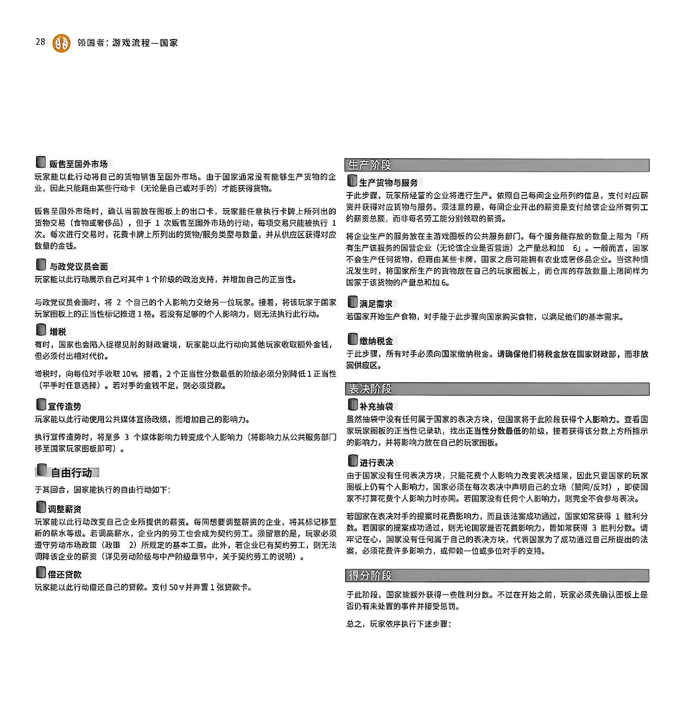
贩卖至国外市场
玩家能以此行动将自己的货物销售至国外市场。由于国家通常没有能够生产货物的企业，因此只能藉由某些行动卡（无论是自己或对手的）才能获得货物。
贩卖至国外市场时，确认当前放在图板上的出口卡，玩家能任意执行卡牌上所列出的货物交易（食物或奢侈品），但于 1 次贩卖至国外市场的行动，每项交易只能被执行 1 次。每次进行交易时，花费卡牌上所列出的货物/服务类型与数量，并从供应区获得对应数量的金钱。
与政党议员会面
玩家能以此行动展示自己对其中 1 个阶级的政治支持，并增加自己的正当性。
与政党议员会面时，将 2 个自己的个人影响力交给另一位玩家。接着，将该玩家于国家玩家图板上的正当性标记推进 1 格。若没有足够的个人影响力，则无法执行此行动。
增税
有时，国家也会陷入捉襟见肘的财政窘境，玩家能以此行动向其他玩家收取额外金钱，但必须付出相对代价。
增税时，向每位对手收取 10𝓥。接着，2 个正当性分数最低的阶级必须分别降低 1 正当性（平手时任意选择）。若对手的金钱不足，则必须贷款。
宣传造势
玩家能以此行动使用公共媒体宣扬政绩，而增加自己的影响力。
执行宣传造势时，将至多 3 个媒体影响力转变成个人影响力（将影响力从公共服务部门移至国家玩家图板即可）。
自由行动
于其回合，国家能执行的自由行动如下：
调整薪资
玩家能以此行动改变自己企业所提供的薪资。每间想要调整薪资的企业，将其标记移至新的薪水等级。若调高薪水，企业内的劳工也会成为契约劳工。须留意的是，玩家必须遵守劳动市场政策（政策 2）所规定的基本工资。此外，若企业已有契约劳工，则无法调降该企业的薪资（详见劳动阶级与中产阶级章节中，关于契约劳工的说明）。
偿还贷款
玩家能以此行动偿还自己的贷款。支付 50𝓥 并弃置 1 张贷款卡。
生产阶段
生产货物与服务
于此步骤，玩家所经营的企业将进行生产。依照自己每间企业所列的信息，支付对应薪资并获得对应货物与服务。须注意的是，每间企业开出的薪资是支付给该企业所有劳工的薪资总额，而非每名劳工能分别领取的薪资。
将企业生产的服务放在主游戏图板的公共服务部门。每个服务能存放的数量上限为「所有生产该服务的国营企业（无论该企业是否营运）之产量总和加 6」。一般而言，国家不会生产任何货物，但藉由某些卡牌，国家之后可能拥有农业或奢侈品企业。当这种情况发生时，将国家所生产的货物放在自己的玩家图板上，而仓库的存放数量上限同样为国家于该货物的产量总和加 6。
满足需求
若国家开始生产食物，对手能于此步骤向国家购买食物，以满足他们的基本需求。
缴纳税金
于此步骤，所有对手必须向国家缴纳税金。请确保他们将税金放在国家财政部，而非放回供应区。
表决阶段
补充抽袋
虽然抽袋中没有任何属于国家的表决方块，但国家将于此阶段获得个人影响力。查看国家玩家图板的正当性记录轨，找出正当性分数最低的阶级，接着获得该分数上方所指示的影响力，并将影响力放在自己的玩家图板。
进行表决
由于国家没有任何表决方块，只能花费个人影响力改变表决结果，因此只要国家的玩家图板上仍有个人影响力，国家必须在每次表决中声明自己的立场（赞同/反对），即使国家不打算花费个人影响力时亦同。若国家没有任何个人影响力，则完全不会参与表决。
若国家在表决对手的提案时花费影响力，而且该法案成功通过，国家如常获得 1 胜利分数。若国家的提案成功通过，则无论国家是否花费影响力，皆如常获得 3 胜利分数。请牢记在心，国家没有任何属于自己的表决方块，代表国家为了成功通过自己所提出的法案，必须花费许多影响力，或仰赖一位或多位对手的支持。
得分阶段
于此阶段，国家能额外获得一些胜利分数。不过在开始之前，玩家必须先确认图板上是否仍有未处置的事件并接受惩罚。
总之，玩家依序执行下述步骤：
执行事件惩罚
必须将国家并未处置的所有事件留在主游戏图板上。检查这些卡牌，并执行每张事件「未采取行动」栏位所指出的惩罚—通常是失去某些阶级的正当性。接着，弃置这些卡牌。
正当性得分与调整记录轨
检查国家玩家图板的正当性记录轨，找出 2 个最低的正当性分数，并使国家获得数量等同两者相加之后的胜利分数。接着，将 3 个正当性标记分别移至数值等同「其当前正当性分数之半数（向上取整）」的位置。
最后，若国家面前仍有正当性指示物，每个指示物将使对应的正当性记录轨增加 1 正当性。
政治理念得分
查看国家玩家图板旁的政治理念卡，并检查卡牌上的政策是否与图板的当前政策相符。每项相符的政策，将使国家获得 1 胜利分数。接着弃置该政治理念卡。
范例：游戏进行到得分阶段，安娜从「执行事件惩罚」开始，执行她的得分步骤。
〔图：一张事件卡（下方为其惩罚栏位图示）〕
图板上还有 1 张她未能于行动阶段实时处置而留在场上的事件。该事件的惩罚使安娜分别失去中产阶级与资本阶级的 1 正当性。执行完惩罚之后，安娜弃置该事件。
她接着检查自己玩家图板的正当性记录轨。劳动阶级的正当性是 6，中产阶级是 4，而资本阶级是 5。最低的两个数字是 4 与 5，因此安娜获得 9 胜利分数。
〔图：正当性记录轨（三个标记分别位于 6、4、5）〕
安娜得分之后，必须将所有标记移至其当前分数之半数的位置。因此她将劳动阶级的标记移至 3，中产阶级移至 2，资本阶级移至 3。而安娜还有 2 个正当性指示物，分别属于劳动阶级与中产阶级，因此这两个阶级的正当性分数将分别加 1。
〔图：调整后的正当性记录轨（三个标记分别位于 3、2、3）〕
最后，安娜查看她的政治理念卡，与图板的政策表互相比较之后发现，有 3 个政策与卡牌一致：财政政策、税赋政策、福利国家：医疗与补助。因此她额外获得 3 胜利分数，并弃置该张卡牌。
〔图：政治理念卡（左）与图板政策表（右）〕
游戏结束
游戏结束时，玩家还会额外获得些许胜利分数：
- 自己的仓库每剩余 2🌾 / 3 ▢ / 3 ♥ / 3 🎓 / 3 媒体 💬，获得 1 胜利分数。
- 国家财政部每剩余 30𝓥 获得 1 胜利分数。
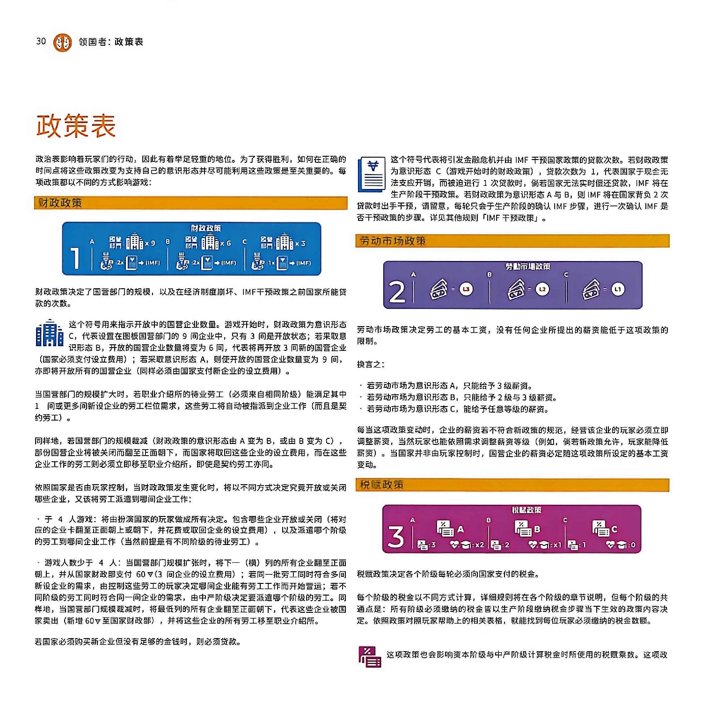
政策表
政策表影响着玩家们的行动，因此有着举足轻重的地位。为了获得胜利，如何在正确的时间点将这些政策改变为支持自己的意识形态并尽可能利用这些政策是至关重要的。每项政策都以不同的方式影响游戏：
财政政策
〔图：财政政策表（政策 1），意识形态 A、B、C 分别对应 ×9、×6、×3 的国营企业数量与贷款次数图示〕
财政政策决定了国营部门的规模，以及在经济制度崩坏、IMF 干预政策之前国家所能贷款的次数。
这个符号用来指示开放中的国营企业数量。游戏开始时，财政政策为意识形态 C，代表设置在图板国营部门的 9 间企业中，只有 3 间是开放状态；若采取意识形态 B，开放的国营企业数量将变为 6 间，代表将再开放 3 间新的国营企业（国家必须支付设立费用）；若采取意识形态 A，则使开放的国营企业数量变为 9 间，亦即将开放所有的国营企业（同样必须由国家支付新企业的设立费用）。
当国营部门的规模扩大时，若职业介绍所的待业劳工（必须来自相同阶级）能满足其中 1 间或更多间新设企业的劳工栏位需求，这些劳工将自动被指派到企业工作（而且是契约劳工）。
同样地，若国营部门的规模裁减（财政政策的意识形态由 A 变为 B，或由 B 变为 C），部份国营企业将被关闭而翻至正面朝下，而国家将取回这些企业的设立费用，而在这些企业工作的劳工则必须立即移至职业介绍所，即使是契约劳工亦同。
依照国家是否由玩家控制，当财政政策发生变化时，将以不同方式决定究竟开放或关闭哪些企业，又该将劳工派遣到哪间企业工作：
- 于 4 人游戏：将由扮演国家的玩家做成所有决定。包含哪些企业开放或关闭（将对应的企业卡翻至正面朝上或朝下，并花费或取回企业的设立费用），以及派遣哪个阶级的劳工到哪间企业工作（当然前提是有不同阶级的待业劳工）。
- 游戏人数少于 4 人：当国营部门规模扩张时，将下一（横）列的所有企业翻至正面朝上，并从国家财政部支付 60𝓥（3 间企业的设立费用）；若同一批劳工同时符合多间新设企业的需求，由控制这些劳工的玩家决定哪间企业能有劳工工作而开始营运；若不同阶级的劳工同时符合同一间企业的需求，由中产阶级决定要派遣哪个阶级的劳工。同样地，当国营部门规模裁减时，将最低列的所有企业翻至正面朝下，代表这些企业被国家卖出（新增 60𝓥 至国家财政部），并将这些企业的所有劳工移至职业介绍所。
若国家必须购买新企业但没有足够的金钱时，则必须贷款。
这个符号代表将引发金融危机并由 IMF 干预国家政策的贷款次数。若财政政策为意识形态 C（游戏开始时的财政政策），贷款次数为 1，代表国家于现金无法支应开销，而被迫进行 1 次贷款时，倘若国家无法实时偿还贷款，IMF 将在生产阶段干预政策。若财政政策为意识形态 A 与 B，则 IMF 将在国家背负 2 次贷款时出手干预，请注意，每轮只会于生产阶段的确认 IMF 步骤，进行一次确认 IMF 是否干预政策的步骤。详见其他规则「IMF 干预政策」。
劳动市场政策
〔图：劳动市场政策表（政策 2），意识形态 A、B、C 分别对应薪资等级 L3、L2、L1〕
劳动市场政策决定劳工的基本工资，没有任何企业所提出的薪资能低于这项政策的限制。
换言之：
- 若劳动市场为意识形态 A，只能给予 3 级薪资。
- 若劳动市场为意识形态 B，只能给予 2 级与 3 级薪资。
- 若劳动市场为意识形态 C，能给予任意等级的薪资。
每当这项政策变动时，企业的薪资若不符合新政策的规范，经营该企业的玩家必须立即调整薪资。当然玩家也能依照需求调整薪资等级（例如，倘若新政策允许，玩家能降低薪资）。当国家并非由玩家控制时，国营企业的薪资必定随这项政策所设定的基本工资变动。
税赋政策
〔图：税赋政策表（政策 3），意识形态 A、B、C 对应的税金图示〕
税赋政策决定各个阶级每轮必须向国家支付的税金。
每个阶级的税金以不同方式计算，详细规则将在各个阶级的章节说明，但每个阶级的共同点是：所有阶级必须缴纳的税金皆以生产阶段缴纳税金步骤当下生效的政策内容决定。依照政策对照玩家帮助上的相关表格，就能找到每位玩家必须缴纳的税金数额。
这项政策也会影响资本阶级与中产阶级计算税金时所使用的税赋乘数。这项政策不只增加或减少税赋乘数的基础数值，同时也决定是否采计其他的税赋乘数修正值（来自政策 4 与 5，详见下述）：
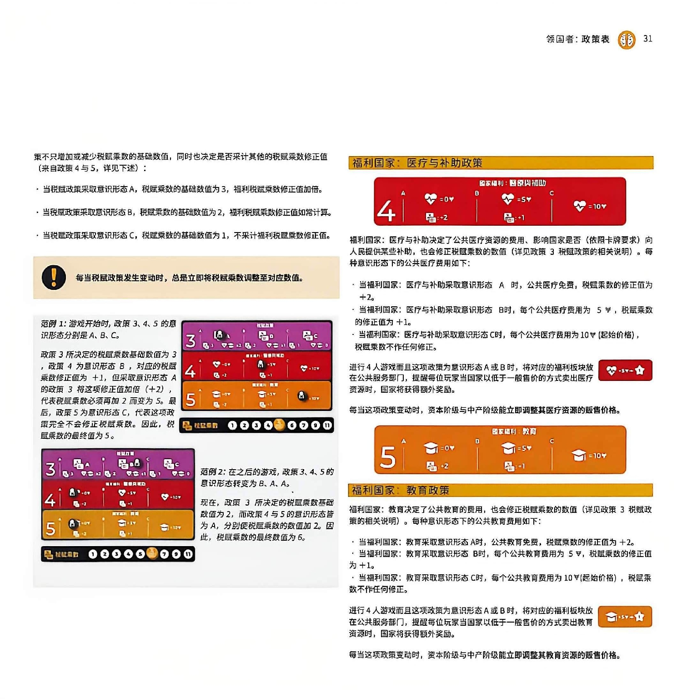
- 当税赋政策采取意识形态 A，税赋乘数的基础数值为 3，福利税赋乘数修正值加倍。
- 当税赋政策采取意识形态 B，税赋乘数的基础数值为 2，福利税赋乘数修正值如常计算。
- 当税赋政策采取意识形态 C，税赋乘数的基础数值为 1，不采计福利税赋乘数修正值。
！每当税赋政策发生变动时，总是立即将税赋乘数调整至对应数值。
范例 1：游戏开始时，政策 3、4、5 的意识形态分别是 A、B、C。
政策 3 所决定的税赋乘数基础数值为 3，政策 4 为意识形态 B，对应的税赋乘数修正值为 +1，但采取意识形态 A 的政策 3 将这项修正值加倍（+2），代表税赋乘数必须再加 2 而变为 5。最后，政策 5 为意识形态 C，代表这项政策完全不会修正税赋乘数。因此，税赋乘数的最终值为 5。
〔图：政策表图示，政策 3、4、5 分别位于意识形态 A、B、C；下方税赋乘数轨的指针位于 5〕
〔图：政策表图示，政策 3、4、5 分别位于意识形态 B、A、A；下方税赋乘数轨的指针位于 6〕
范例 2：在之后的游戏，政策 3、4、5 的意识形态转变为 B、A、A。
现在，政策 3 所决定的税赋乘数基础数值为 2，而政策 4 与 5 的意识形态皆为 A，分别使税赋乘数的数值加 2。因此，税赋乘数的最终数值为 6。
福利国家：医疗与补助政策
〔图：政策 4 政策表卡牌图示（红底，卡名小字不清），显示意识形态 A／B／C 下公共医疗费用分别为 0𝓥／5𝓥／10𝓥，税赋乘数修正 +2／+1／无〕
福利国家：医疗与补助决定了公共医疗资源的费用、影响国家是否（依照卡牌要求）向人民提供某些补助，也会修正税赋乘数的数值（详见政策 3 税赋政策的相关说明）。每种意识形态下的公共医疗费用如下：
- 当福利国家：医疗与补助采取意识形态 A 时，公共医疗免费，税赋乘数的修正值为 +2。
- 当福利国家：医疗与补助采取意识形态 B 时，每个公共医疗费用为 5𝓥，税赋乘数的修正值为 +1。
- 当福利国家：医疗与补助采取意识形态 C 时，每个公共医疗费用为 10𝓥（起始价格），税赋乘数不作任何修正。
进行 4 人游戏而且这项政策为意识形态 A 或 B 时，将对应的福利板块放在公共服务部门，提醒每位玩家当国家以低于一般售价的方式卖出医疗资源时，国家将获得额外奖励。〔图：红色福利板块图示（♥ 5𝓥→★）〕
每当这项政策变动时，资本阶级与中产阶级能立即调整其医疗资源的贩售价格。
福利国家：教育政策
〔图：政策 5 政策表卡牌图示（橙底，卡名小字不清），显示意识形态 A／B／C 下公共教育费用分别为 0𝓥／5𝓥／10𝓥，税赋乘数修正 +2／+1／无〕
福利国家：教育决定了公共教育的费用，也会修正税赋乘数的数值（详见政策 3 税赋政策的相关说明）。每种意识形态下的公共教育费用如下：
- 当福利国家：教育采取意识形态 A 时，公共教育免费，税赋乘数的修正值为 +2。
- 当福利国家：教育采取意识形态 B 时，每个公共教育费用为 5𝓥，税赋乘数的修正值为 +1。
- 当福利国家：教育采取意识形态 C 时，每个公共教育费用为 10𝓥（起始价格），税赋乘数不作任何修正。
进行 4 人游戏而且这项政策为意识形态 A 或 B 时，将对应的福利板块放在公共服务部门，提醒每位玩家当国家以低于一般售价的方式卖出教育资源时，国家将获得额外奖励。〔图：橙色福利板块图示（🎓 5𝓥→★）〕
每当这项政策变动时，资本阶级与中产阶级能立即调整其教育资源的贩售价格。
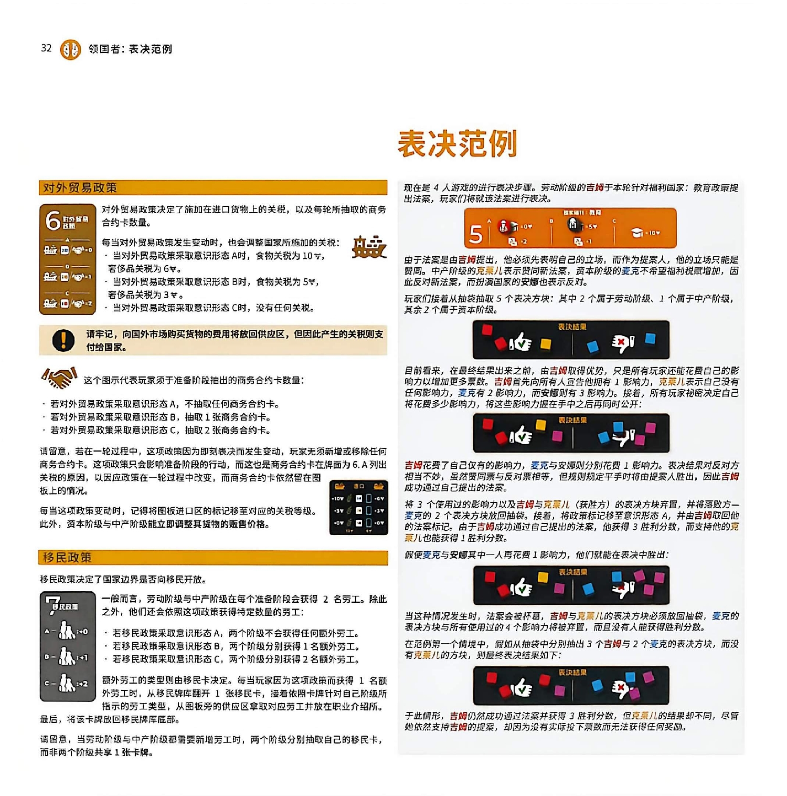
对外贸易政策
〔图：政策 6（对外贸易政策）卡牌图示（棕底），意识形态 A／B／C 分别对应每轮抽取 0／1／2 张商务合约卡〕
对外贸易政策决定了施加在进口货物上的关税，以及每轮所抽取的商务合约卡数量。
每当对外贸易政策发生变动时，也会调整国家所施加的关税：
- 当对外贸易政策采取意识形态 A 时，食物关税为 10𝓥，奢侈品关税为 6𝓥。
- 当对外贸易政策采取意识形态 B 时，食物关税为 5𝓥，奢侈品关税为 3𝓥。
- 当对外贸易政策采取意识形态 C 时，没有任何关税。
！请牢记，向国外市场购买货物的费用将放回供应区，但因此产生的关税则支付给国家。
〔图：握手图示〕这个图示代表玩家须于准备阶段抽出的商务合约卡数量：
- 若对外贸易政策采取意识形态 A，不抽取任何商务合约卡。
- 若对外贸易政策采取意识形态 B，抽取 1 张商务合约卡。
- 若对外贸易政策采取意识形态 C，抽取 2 张商务合约卡。
请留意，若在一轮过程中，这项政策因为即刻表决而发生变动，玩家无须新增或移除任何商务合约卡。这项政策只会影响准备阶段的行动，而这也是商务合约卡在牌面为 6.A 列出关税的原因，以因应政策在一轮过程中改变，而商务合约卡依然留在图板上的情况。
每当这项政策变动时，记得将图板进口区的标记移至对应的关税等级。此外，资本阶级与中产阶级能立即调整其货物的贩售价格。
〔图：图板进口区标记图示，三档关税等级分别对应食物关税 10𝓥／5𝓥／0𝓥 与奢侈品关税 6𝓥／3𝓥／0𝓥〕
移民政策
移民政策决定了国家边界是否向移民开放。
〔图：政策 7（移民政策）卡牌图示（深灰底），意识形态 A／B／C 分别对应额外劳工 0／1／2 名〕
一般而言，劳动阶级与中产阶级在每个准备阶段会获得 2 名劳工。除此之外，他们还会依照这项政策获得特定数量的劳工：
- 若移民政策采取意识形态 A，两个阶级不会获得任何额外劳工。
- 若移民政策采取意识形态 B，两个阶级分别获得 1 名额外劳工。
- 若移民政策采取意识形态 C，两个阶级分别获得 2 名额外劳工。
额外劳工的类型则由移民卡决定。每当玩家因为这项政策而获得 1 名额外劳工时，从移民牌库翻开 1 张移民卡，接着依照卡牌针对自己阶级所指示的劳工类型，从图板旁的供应区拿取对应劳工并放在职业介绍所。最后，将该卡牌放回移民牌库底部。
请留意，当劳动阶级与中产阶级都需要新增劳工时，两个阶级分别抽取自己的移民卡，而非两个阶级共享 1 张卡牌。
表决范例
现在是 4 人游戏的进行表决步骤。劳动阶级的吉姆于本轮针对福利国家：教育政策提出法案，玩家们将就该法案进行表决。
〔图：政策 5「福利国家：教育」政策表图示——政策标记位于意识形态 B，吉姆的红色法案标记位于意识形态 A〕
由于法案是由吉姆提出，他必须先表明自己的立场，而作为提案人，他的立场只能是赞成。中产阶级的克莱儿表示赞同新法案，资本阶级的麦克不希望福利税赋增加，因此反对新法案，而扮演国家的安娜也表示反对。
玩家们接着从抽袋抽取 5 个表决方块：其中 2 个属于劳动阶级、1 个属于中产阶级，其余 2 个属于资本阶级。
〔图：「表决结果」图示——赞成一侧为 2 红 1 黄表决方块，反对一侧为 2 蓝表决方块〕
目前看来，在最终结果出来之前，由吉姆取得优势，只是所有玩家还能花费自己的影响力以增加更多票数。吉姆首先向所有人宣告他拥有 1 影响力，克莱儿表示自己没有任何影响力，麦克有 2 影响力，而安娜则有 3 影响力。接着，所有玩家秘密决定自己将花费多少影响力，将这些影响力握在手中之后再同时公开：
〔图：「表决结果」图示——赞成 2 红 1 黄 1 紫方块，反对 2 蓝 2 紫方块，4 比 4 平手〕
吉姆花费了自己仅有的影响力，麦克与安娜则分别花费 1 影响力。表决结果对反对方相当不妙，虽然赞成票与反对票相等，但规则规定平手时将由提案人胜出，因此吉姆成功通过自己提出的法案。
将 3 个使用过的影响力以及吉姆与克莱儿（获胜方）的表决方块弃置，并将落败方—麦克的 2 个表决方块放回抽袋。接着，将政策标记移至意识形态 A，并由吉姆取回他的法案标记。由于吉姆成功通过自己提出的法案，他获得 3 胜利分数，而支持他的克莱儿也能获得 1 胜利分数。
假使麦克与安娜其中一人再花费 1 影响力，他们就能在表决中胜出：
〔图：「表决结果」图示——赞成 2 红 1 黄 1 紫方块，反对 2 蓝 3 紫方块，反对方胜出〕
当这种情况发生时，法案会被否决，吉姆与克莱儿的表决方块必须放回抽袋，麦克的表决方块与所有使用过的 4 个影响力将被弃置，而且没有人能获得胜利分数。
在范例第一个情境中，假如从抽袋中分别抽出 3 个吉姆与 2 个麦克的表决方块，而没有克莱儿的方块，则最终表决结果如下：
〔图：「表决结果」图示——赞成 3 红 1 紫方块，反对 2 蓝 2 紫方块，再度平手〕
于此情形，吉姆仍然成功通过法案并获得 3 胜利分数，但克莱儿的结果却不同，尽管她依然支持吉姆的提案，却因为没有实际投下票数而无法获得任何奖励。
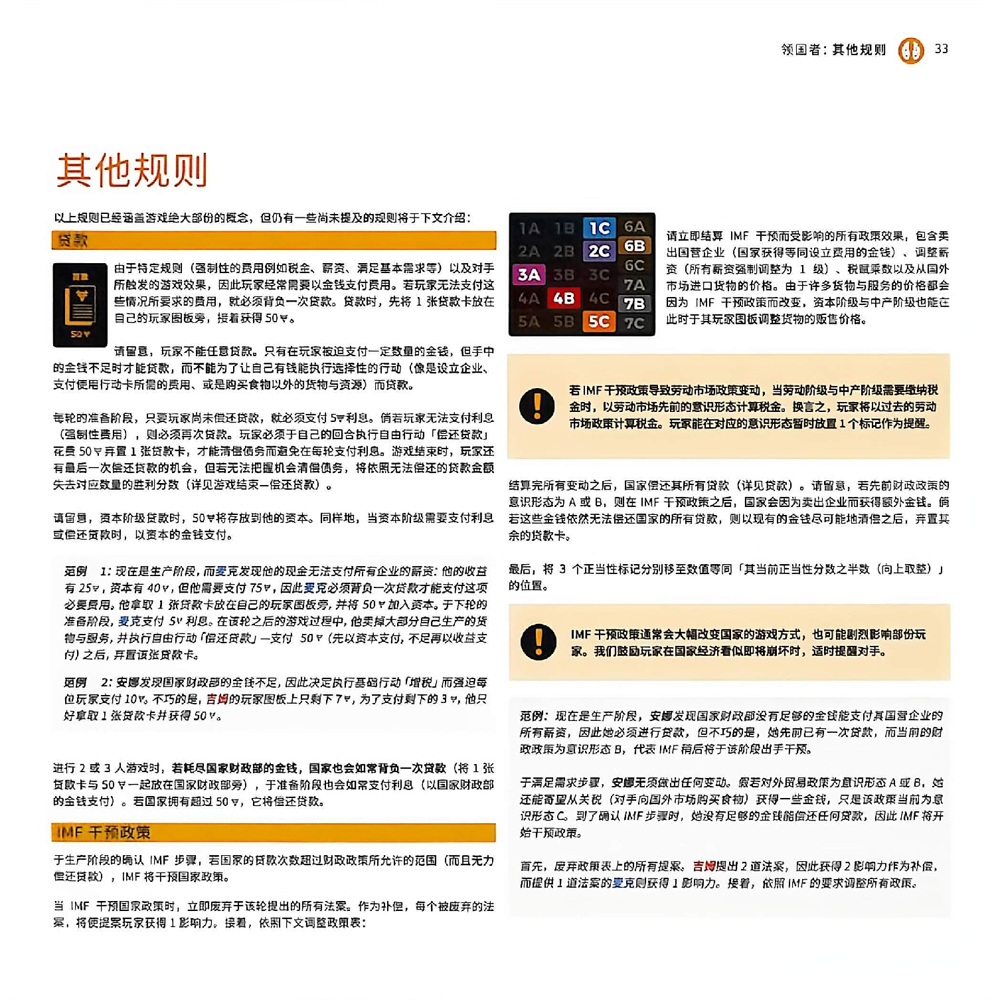
其他规则
以上规则已经涵盖游戏绝大部份的概念，但仍有一些尚未提及的规则将于下文介绍：
贷款
(图：贷款卡，面额 50 𝓥)
由于特定规则(强制性的费用例如税金、薪资、满足基本需求等)以及对手所触发的游戏效果，因此玩家经常需要以金钱支付费用。若玩家无法支付这些情况所要求的费用，就必须背负一次贷款。贷款时，先将 1 张贷款卡放在自己的玩家图板旁，接着获得 50𝓥。
请留意，玩家不能任意贷款。只有在玩家被迫支付一定数量的金钱，但手中的金钱不足时才能贷款，而不能为了让自己有钱能执行选择性的行动(像是设立企业、支付使用行动卡所需的费用、或是购买食物以外的货物与资源)而贷款。
每轮的准备阶段，只要玩家尚未偿还贷款，就必须支付 5𝓥 利息。倘若玩家无法支付利息(强制性费用)，则必须再次贷款。玩家必须于自己的回合执行自由行动「偿还贷款」花费 50𝓥 弃置 1 张贷款卡，才能清偿债务而避免在每轮支付利息。游戏结束时，玩家还有最后一次偿还贷款的机会，但若无法把握机会清偿债务，将依照无法偿还的贷款金额失去对应数量的胜利分数(详见游戏结束—偿还贷款)。
请留意，资本阶级贷款时，50𝓥 将存放到他的资本。同样地，当资本阶级需要支付利息或偿还贷款时，以资本的金钱支付。
范例 1:现在是生产阶段，而夏克发现他的现金无法支付所有企业的薪资：他的收益有 25𝓥，资本有 40𝓥，但他需要支付 75𝓥，因此夏克必须背负一次贷款才能支付这项必要费用。他拿取 1 张贷款卡放在自己的玩家图板旁，并将 50𝓥 加入资本。于下轮的准备阶段，夏克支付 5𝓥 利息。在该轮之后的游戏过程中，他卖掉大部分自己生产的货物与劳务，并执行自由行动「偿还贷款」—支付 50𝓥(先以资本支付，不足再以收益支付)之后，弃置该张贷款卡。
范例 2:安娜发现国家财政部的金钱不足，因此决定执行基础行动「增税」而被迫每位玩家支付 10𝓥。不巧的是，吉姆的玩家图板上只剩下 7𝓥，为了支付剩下的 3𝓥，他只好拿取 1 张贷款卡并获得 50𝓥。
进行 2 或 3 人游戏时，若耗尽国家财政部的金钱，国家也会如常背负一次贷款(将 1 张贷款卡与 50𝓥 一起放在国家财政部旁)，于准备阶段也会如常支付利息(以国家财政部的金钱支付)。若国家拥有超过 50𝓥，它将偿还贷款。
IMF 干预政策
于生产阶段的确认 IMF 步骤，若国家的贷款次数超过财政政策所允许的范围(而且无力偿还贷款),IMF 将干预国家政策。
当 IMF 干预国家政策时，立即废弃于该轮提出的所有法案。作为补偿，每个被废弃的法案，将使提案玩家获得 1 影响力。接着，依照下文调整政策表：
(图：政策表，其中 1C、2C、3A、4B、5C、6B、7B 格位被高亮)
请立即结算 IMF 干预而受影响的所有政策效果，包含卖出国营企业(国家获得等同设立费用的金钱)、调整薪资(所有薪资强制调整为 1 级)、税赋乘数以及从国外市场进口货物的价格。由于许多货物与服务的价格都会因为 IMF 干预政策而改变，资本阶级与中产阶级也能在此时于其玩家图板调整货物的贩售价格。
! 若 IMF 干预政策导致劳动市场政策变动，当劳动阶级与中产阶级需要缴纳税金时，以劳动市场先前的意识形态计算税金。换言之，玩家将以过去的劳动市场政策计算税金。玩家能在对应的意识形态暂时放置 1 个标记作为提醒。
结算完所有变动之后，国家偿还其所有贷款(详见贷款)。请留意，若先前财政政策的意识形态为 A 或 B，则在 IMF 干预政策之后，国家会因为卖出企业而获得额外金钱。倘若这些金钱依然无法偿还国家的所有贷款，则以现有的金钱尽可能地清偿之后，弃置其余的贷款卡。
最后，将 3 个正当性标记分别移至数值等同「其当前正当性分数之半数(向上取整)」的位置。
! IMF 干预政策通常会大幅改变国家的游戏方式，也可能剧烈影响部份玩家。我们鼓励玩家在国家经济看似即将崩坏时，适时提醒对手。
范例:现在是生产阶段，安娜发现国家财政部没有足够的金钱能支付其国营企业的所有薪资，因此她必须进行贷款，但不巧的是，她先前已有一次贷款，而当前的财政政策为意识形态 B，代表 IMF 稍后将于该阶段出手干预。
于满足需求步骤，安娜无须做出任何变动。假若对外贸易政策为意识形态 A 或 B，她还能寄望从关税(对手向国外市场购买食物)获得一些金钱，只是该政策当前为意识形态 C。到了确认 IMF 步骤时，她没有足够的金钱能偿还任何贷款，因此 IMF 将开始干预政策。
首先，废弃政策表上的所有提案。吉姆提出 2 道法案，因此获得 2 影响力作为补偿，而提供 1 道法案的夏克则获得 1 影响力。接着，依照 IMF 的要求调整所有政策。
(左图：IMF 干预政策之前;右图：IMF 干预政策之后)
政策表的改变将导致图板发生许多变化：
- 由于财政政策改变，安娜只能保留其中 3 间并关闭其他 3 间国营企业。在她选择关闭哪些企业之后，每间企业的设立费用为 20𝓥，因此国家财政部增加 60𝓥。但不巧的是，有劳工正为其中 2 间被关闭的企业工作，所以必须将这些劳工移至职业介绍所。
- 由于劳动市场政策改变，基本工资降为 1 级，夏克、克莱儿与安娜将所有企业卡上的标记移至最低薪资的位置。
- 由于税赋政策的意识形态变为 A，加上福利国家政策的影响，导致税赋乘数由 1 变成 5。
- 由于福利国家政策改变，必须连带调整福利板块。将医疗福利板块翻至对应政策 4B 的那一面，并从图板移除教育福利板块。由于公共医疗与公共教育的费用改变，夏克与克莱儿决定同时调整这些资源于其玩家图板的贩售价格。。
- 由于国外市场改变，图板上进口区的标记移至中间位置。因此来自国外市场的食物和奢侈品的价格会提高。夏克与克莱儿也决定同时调整这些资源于其玩家图板的贩售价格。
接着，国家必须尽可能地偿还贷款。安娜背负第二次贷款支付薪资之后，国家财政部还剩下 27𝓥。调整财政政策之后，国家财政部因为关闭国营企业获得 60𝓥 而拥有 87𝓥。安娜用这些金钱偿还所有贷款并弃置 2 张贷款卡。
最后，安娜将 3 个正当性标记分别移至数值等同「其当前正当性分数之半数」的位置。劳动阶级的正当性标记原本在 6，现在移至 3;中产阶级的标记从 8 移至 4;资本阶级也从 7 移至 4。
(图：正当性轨道)
配件数量限制
玩家只能使用游戏所提供的配件进行游戏，这意味着如果玩家从抽袋抽完所有属于自己的表决方块，就不能再于表决过程放置方块。同样地，若没有剩余的影响力，就不能再购买或获得更多影响力。
若已将某个产业(颜色)的所有劳工放在图板上，则无法再经由教育将无经验劳工变为该产业的熟练劳工。此外，若游戏效果(例如移民卡)指示玩家在职业介绍所放置 1 名熟练劳工，已用完供应区所有的熟练劳工时，改为放置 1 名无经验劳工。
若游戏要求玩家在图板放置 1 名无经验劳工，但没有剩余的无经验劳工时，改为放置任意颜色的熟练劳工。
致谢
- 游戏设计:Varnavas Timotheou, Vangelis Bagiartakis
- 游戏开发:Anastasios Grigoriadis
- 美术:Jakub Skop
- 平面设计:Dimitris Anastasiadis & Katerina Xerovasila (truly.gr)
- 编辑:Eric Engstrom, Grey Dolphin Game Development
- 学术顾问:Dr Russell Foster, Dr Pawel Adrjan, Alexander Gertz, Andreas Dounis, Dr Christopher Holmes, Dr Irina Burlacu
- 首席游戏测试员:Theo K. Mavraganis
- 游戏测试员:Artie Heinrich, Akis Tsakliotis, Dimitris Siakambenis, Stefanos Spanoudakis, Andreas Katelanos, Mike Georgiou, Haralambos Tsakiris, Konstantinos Karagiannis, Alexandros Kapidakis, Alexandros Sianos, Volker Elzner, Christoph Kiebeler, Selma Wittke, Dimitris Tavoularis, Vassilis Miliongs, Sokratis Goundanas, Stavros Tsiakalos
Vangelis Bagiartakis 想将这款游戏献给他的儿子，Asterios.
(图：出版商标识)
©2022 Hegemonic Project Limited.
Hegemony: Lead your Class to victory 为 Hegemonic Project Limited 所注册的商标。版权所有，未经特别许可，禁止重制本产品的任何内容。CMON 与 CMON 标志为 CMON Global Limited.的注册商标。实际游戏配件可能与图示不符。中国制造。
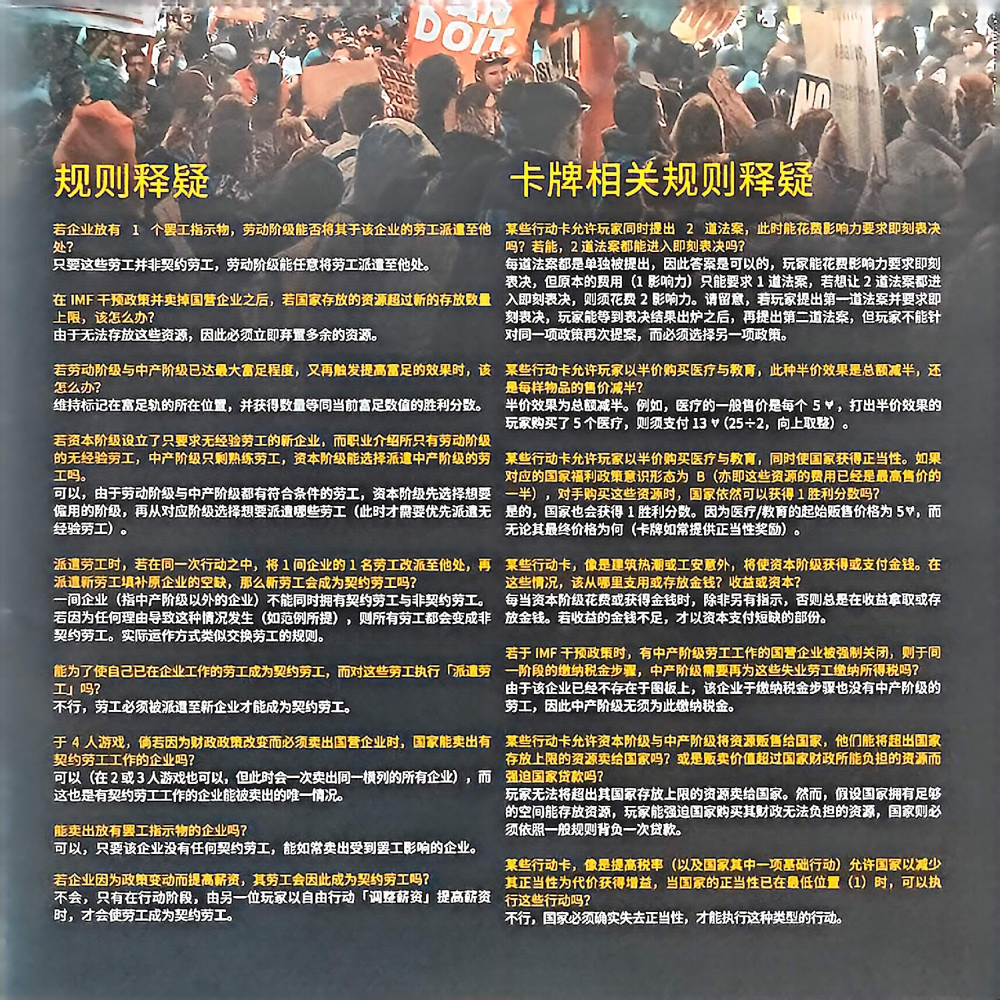
规则释疑
若企业放有 1 个罢工指示物，劳动阶级能否将其于该企业的劳工派遣至他处？
只要这些劳工并非契约劳工，劳动阶级能任意将劳工派遣至他处。
在 IMF 干预政策并卖掉国营企业之后，若国家存放的资源超过新的存放数量上限，该怎么办？
由于无法存放这些资源，因此必须立即弃置多余的资源。
若劳动阶级与中产阶级已达最大富足程度，又再触发提高富足的效果时，该怎么办？
维持标记在富足轨的所在位置，并获得数量等同当前富足数值的胜利分数。
若资本阶级设立了只要求无经验劳工的新企业，而职业介绍所只有劳动阶级的无经验劳工，中产阶级只剩熟练劳工，资本阶级能选择派遣中产阶级的劳工吗。
可以，由于劳动阶级与中产阶级都有符合条件的劳工，资本阶级先选择想要雇用的阶级，再从对应阶级选择想要派遣哪些劳工（此时才需要优先派遣无经验劳工）。
派遣劳工时，若在同一次行动之中，将 1 间企业的 1 名劳工改派至他处，再派遣新劳工填补原企业的空缺，那么新劳工会成为契约劳工吗？
一间企业（指中产阶级以外的企业）不能同时拥有契约劳工与非契约劳工。若因为任何理由导致这种情况发生（如范例所提），则所有劳工都会变成非契约劳工。实际运作方式类似交换劳工的规则。
能为了使自己已在企业工作的劳工成为契约劳工，而对这些劳工执行「派遣劳工」吗？
不行，劳工必须被派遣至新企业才能成为契约劳工。
于 4 人游戏，倘若因为财政政策改变而必须卖出国营企业时，国家能卖出有契约劳工工作的企业吗？
可以（在 2 或 3 人游戏也可以，但此时会一次卖出同一横列的所有企业），而这也是有契约劳工工作的企业能被卖出的唯一情况。
能卖出放有罢工指示物的企业吗？
可以，只要该企业没有任何契约劳工，能如常卖出受到罢工影响的企业。
若企业因为政策变动而提高薪资，其劳工会因此成为契约劳工吗？
不会，只有在行动阶段，由另一位玩家以自由行动「调整薪资」提高薪资时，才会使劳工成为契约劳工。
卡牌相关规则释疑
某些行动卡允许玩家同时提出 2 道法案，此时能花费影响力要求即刻表决吗？若能，2 道法案都能进入即刻表决吗？
每道法案都是单独被提出，因此答案是可以的，玩家能花费影响力要求即刻表决，但原本的费用（1 影响力）只能要求 1 道法案，若想让 2 道法案都进入即刻表决，则须花费 2 影响力。请留意，若玩家提出第一道法案并要求即刻表决，玩家能等到表决结果出炉之后，再提出第二道法案，但玩家不能针对同一项政策再次提案，而必须选择另一项政策。
某些行动卡允许玩家以半价购买医疗与教育，此种半价效果是总额减半，还是每样物品的售价减半？
半价效果为总额减半。例如，医疗的一般售价是每个 5𝓥，打出半价效果的玩家购买了 5 个医疗，则须支付 13𝓥 (25÷2，向上取整)。
某些行动卡允许玩家以半价购买医疗与教育，同时使国家获得正当性。如果对应的国家福利政策意识形态为 B（亦即这些资源的费用已经是最高售价的一半），对手购买这些资源时，国家依然可以获得 1 胜利分数吗？
是的，国家也会获得 1 胜利分数。因为医疗/教育的起始贩售价格为 5𝓥，而无论其最终价格为何（卡牌如常提供正当性奖励）。
某些行动卡，像是建筑热潮或工安意外，将使资本阶级获得或支付金钱。在这些情况，该从哪里支用或存放金钱？收益或资本？
每当资本阶级花费或获得金钱时，除非另有指示，否则总是在收益拿取或存放金钱。若收益的金钱不足，才以资本支付短缺的部份。
若于 IMF 干预政策时，有中产阶级劳工工作的国营企业被强制关闭，则于同一阶段的缴纳税金步骤，中产阶级需要再为这些失业劳工缴纳所得税吗？
由于该企业已经不存在于图板上，该企业于缴纳税金步骤也没有中产阶级的劳工，因此中产阶级无须为此缴纳税金。
某些行动卡允许资本阶级与中产阶级将资源贩售给国家，他们能将超出国家存放上限的资源卖给国家吗？或是贩卖价值超过国家财政所能负担的资源而强迫国家贷款吗？
玩家无法将超出其国家存放上限的资源卖给国家。然而，假设国家拥有足够的空间能存放资源，玩家能强迫国家购买其财政无法负担的资源，国家则必须依照一般规则背负一次贷款。
某些行动卡，像是提高税率（以及国家其中一项基础行动）允许国家以减少其正当性为代价获得增益，当国家的正当性已在最低位置（1）时，可以执行这些行动吗？
不行，国家必须确实失去正当性，才能执行这种类型的行动。
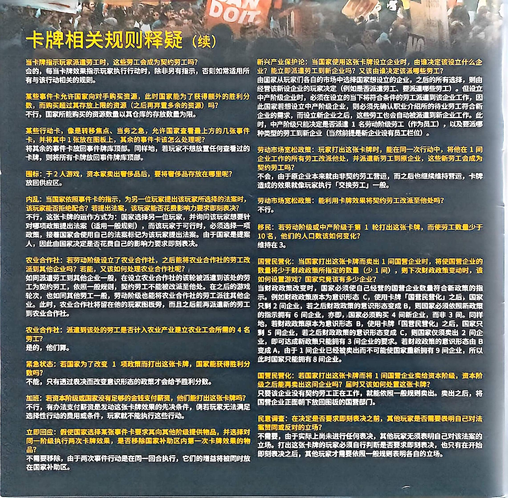
卡牌相关规则释疑（续）
当卡牌指示玩家派遣劳工时，这些劳工会成为契约劳工吗？
会的，每当卡牌效果指示玩家执行行动时，除非另有指示，否则如常适用所有与该行动相关的规则。
某些事件卡允许国家向对手购买资源，此时国家能为了获得额外的胜利分数，而购买超过其存放上限的资源（之后再弃置多余的资源）吗？
不行，国家所能购买的资源数量以其仓库的存放数量为限。
某些行动卡，像是转移焦点、当务之急，允许国家查看最上方的几张事件卡，并将其中 1 张放在图板上，其余的事件卡该怎么处理呢？
将其余的事件卡放回事件牌库顶部。同样地，若玩家不想放置任何查看过的卡牌，则将所有卡牌放回事件牌库顶部。
囤积：于 2 人游戏，资本家卖出奢侈品后，要将奢侈品存放在哪里呢？
放回供应区。
内乱：当国家依照事件卡的指示，为另一位玩家提出该玩家所选择的法案时，该玩家能否拒绝配合？若提出法案，该玩家能否花费影响力要求即刻表决？
不行，这张卡牌的运作方式为：国家选择另一位玩家，并询问该玩家想要针对哪项政策提出法案（适用一般规则），而该玩家于可行时，必须选择一项政策，接着国家会使用自己的法案标记为该玩家提出法案。由于国家是提案人，因此由国家决定是否花费自己的影响力要求即刻表决。
农业合作社：若劳动阶级设立了农业合作社，之后能将农业合作社的劳工改派到其他企业吗？若能，又该如何处理农业合作社呢？
如同派遣劳工到其他企业一般，在设立农业合作社的该轮被派遣到该处的劳工为契约劳工，依照一般规则，契约劳工不能被改派至他处。在之后的游戏轮次，也如同其他劳工一般，劳动阶级也能将农业合作社的劳工派往其他企业。此时，农业合作社将留在他的玩家图板旁，而且之后能再派遣新的劳工到农业合作社。
农业合作社：派遣到该处的劳工是否计入农业产业建立农业工会所需的 4 名劳工？
是的，他们算。
紧急状态：若国家为了改变 1 项政策而打出这张卡牌，国家能获得胜利分数吗？
不能，只有通过表决而改变意识形态的政策才会给予胜利分数。
加班：若资本阶级或国家没有足够的金钱支付薪资，他们能打出这张卡牌吗？
不行，有办法支付薪资是发动这张卡牌效果的先决条件，倘若玩家无法满足选择性行动的费用或条件，玩家就不能执行这些行动。
立即回应：假使国家选择某张事件卡要求其向其他阶级提供物品，并选择对同一阶级执行两次卡牌效果，是否移除国家补助区内第一次卡牌效果的物品？
不需要移除，由于两次事件行动是在同一回合执行，它们的增益将被同时放在国家补助区。
新兴产业保护论：当国家使用这张卡牌设立企业时，由谁决定该设立什么企业？能立即派遣劳工到新企业吗？又该由谁决定该派哪些劳工？
由国家从玩家们各自的市场中选择国家想设立的企业，之后的所有选择，则由经营该新设企业的玩家决定（例如是否派遣劳工、要派遣哪些劳工）。但设立中产阶级企业时，必须在设立的当下将符合条件的劳工派遣到该企业工作，因此国家若想设立中产阶级企业，则必须先确认职业介绍所的待业劳工符合新企业的需求，而设立新企业之后，这些劳工也会自动被派遣到新企业工作。此时，中产阶级只能决定是否派遣 1 名劳动阶级劳工（作为员工），以及要派哪种类型的劳工到新企业（当然前提是新企业设有员工栏位）。
劳动市场宽松政策：玩家打出这张卡牌时，能在同一次行动中，将他在 1 间企业工作的所有劳工改派他处，并派遣新劳工到原企业，这些新劳工会成为契约劳工吗？
不会，由于原企业本来就由非契约劳工营运，而之后也继续维持营运，卡牌造成的效果就像玩家执行「交换劳工」一般。
劳动市场宽松政策：能利用卡牌效果将契约劳工改派至他处吗？
不行。
移民：若劳动阶级或中产阶级于第 1 轮打出这张卡牌，而使劳工数量少于 10 名，他们的人口数该如何变化？
维持在 3。
国营民营化：当国家打出这张卡牌而卖出 1 间国营企业时，将使国营企业的数量将少于财政政策所指定的数量（少 1 间），则下次财政政策变动时，该如何设置游戏？国家究竟该有多少企业？
当财政政策改变时，国家必须使自己经营的国营企业数量符合新政策的指示。例如财政政策原本为意识形态 C，使用卡牌「国营民营化」之后，国家只剩 2 间企业，若之后财政政策的意识形态变成 B，则国家必须依照新政策的指示拥有 6 间企业，亦即，国家必须购买 4 间新企业，而非 3 间。同样地，若财政政策原本为意识形态 B，使用卡牌「国营民营化」之后，国家只剩 5 间企业，若之后财政政策的意识形态变成 C，则国家仅须卖出 2 间企业，即可达成新政策只能拥有 3 间企业的要求。若财政政策的意识形态由 B 变成 A，由于 1 间企业已经被卖出而不可能使国家重新拥有 9 间企业，所以此时国家只能拥有 8 间企业。
国营民营化：若国家打出这张卡牌而将 1 间国营企业卖给资本阶级，资本阶级之后能再卖出这间企业吗？届时又该如何处置这张卡牌？
只要该企业没有契约劳工正在工作，就能依照一般规则卖出。卖出之后，将国营企业正面朝下放回图板的国营部门。
民意调查：在决定是否要求即刻表决之前，其他玩家是否需要表明自己对法案赞同或反对的立场？
不需要，由于实际上尚未进行任何表决，其他玩家无须表明自己对该法案的立场。打出这张卡牌的玩家必须自行判断是否要求即刻表决，也只有在开始即刻表决之后，其他玩家才需要依照一般规则表明各自的立场。